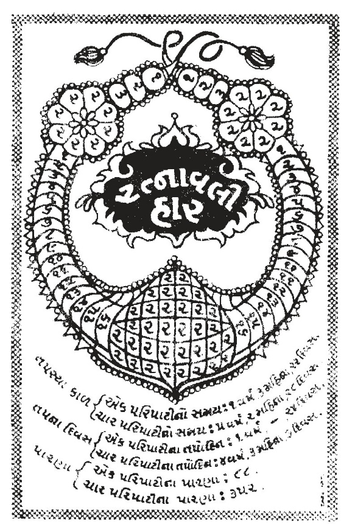
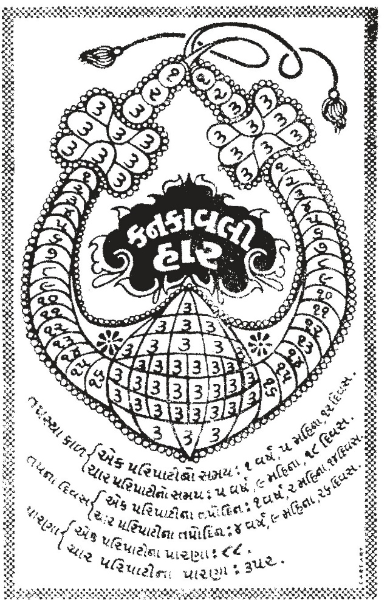
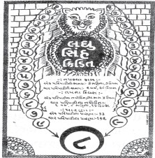
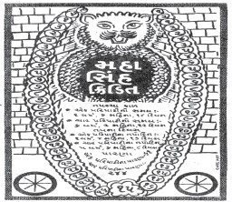
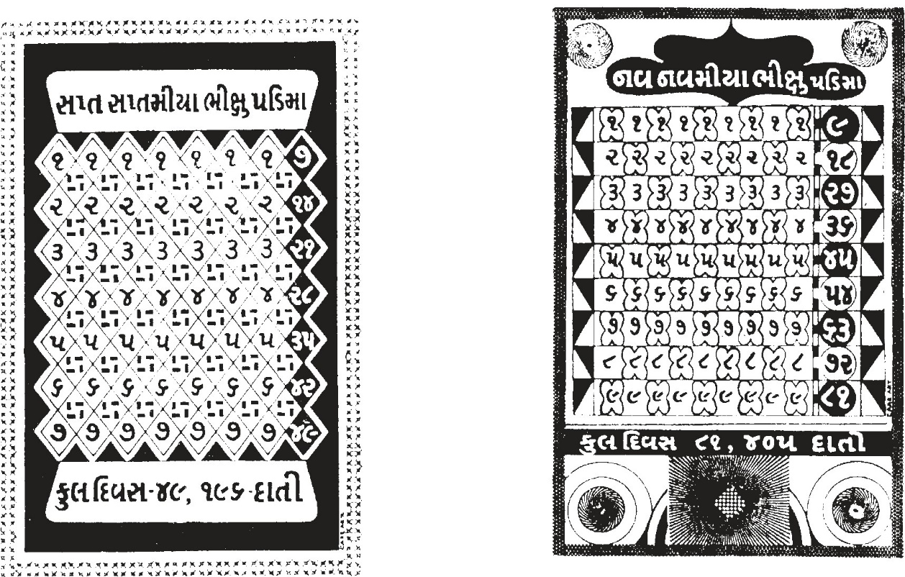
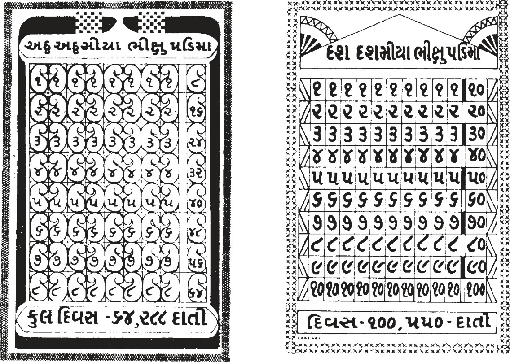

This book Unicode and EPUB Converted by Parth Shah (myself) free of charge as Gyaanseva. You can contact on caparthdshah@gmail.com for further details. You may quote reference "Jain Website"
|
10 11 |
શ્રી કાશ્યપ ગાથાપતિ શ્રી ક્ષેમક ગાથાપતિ શ્રી ધૃતિધર '' શ્રી કૈલાસ '' શ્રીહરિચંદનગાથાપતિ શ્રી વારત્તક ગાથાપતિ શ્રી સુદર્શન '' શ્રી પુણ્યભદ્ર '' શ્રી સુમનભદ્ર '' શ્રી સુપ્રતિષ્ઠિત '' શ્રી મેઘકુમાર '' |
રાજગૃહનગર કાકંદીનગરી કાકંદીનગરી સાકેતનગર સાકેતનગર રાજગૃહનગર વાણિજ્યગ્રામ વાણિજ્યગ્રામ શ્રાવસ્તીનગરી શ્રાવસ્તીનગરી રાજગૃહનગર |
ગુણશીલ – – – – ગુણશીલ દ્યુતિપલાસ દ્યુતિપલાસ – – ગુણશીલ |
16 વર્ષ 16 વર્ષ 16 વર્ષ 12 વર્ષ 12 વર્ષ 12 વર્ષ પ વર્ષ પ વર્ષ ઘણાં વર્ષ 27 વર્ષ ઘણાં વર્ષ |
|
આ સર્વ અણગારો વિપુલગિરિ ઉપર સંથારો કરી સિદ્ધ થયા છે. |
|||||
ા વર્ગ–6 : અધ્ય.–4 થી 14 સંપૂર્ણા 141
છઠ્ઠો વર્ગ અધ્યયન – 15 : અતિમુક્તકુમાર ગૌતમ સ્વામીની ભિક્ષાચર્યા :–
तेणं कालेणं तेणं समएणं पोलासपुरे णयरे । सिरिवणे उज्जाणे । तत्थ णं पोलासपुरे णयरे विजए णामं राया होत्था । तस्स णं विजयस्स रण्णो सिरी णामं देवी होत्था, वण्णओ । तस्स णं विजयस्स रण्णो पुत्ते सिरिए देवीए अत्तए अइमुत्ते णामं कुमारे होत्था, सुकुमालपाणिपाए । तेणं कालेणं तेणं समएणं समणे भगवं महावीरे जाव सिरिवणे उज्जाणे जाव विहरइ । तेणं कालेणं तेणं समएणं समणस्स भगवओ महावीरस्स जेठ्ठे अंतेवासी इंदभूई अणगारे जहा पण्णत्तीए जाव पोलासपुरे णयरे उच्च–णीय–मज्झिमाइं कुलाइं घरसमुदाणस्स भिक्खायरियं अडइ । इमं च णं अइमुत्ते कुमारे ण्हाए जाव सव्वालंकारविभूसिए बहूहिं दारगेहि य दारियाहि य डिंभएहि य डिंभियाहि य कुमारएहि य कुमारियाहि य सद्धिं संपरिवुडे साओ गिहाओ पडिणिक्खमइ, पडिणिक्खमित्ता जेणेव इंदठ्ठाणे तेणेव उवागए तेहिं बहूहिं दारएहि य संपरिवुडे अभिरममाणे–अभिरममाणे विहरइ । तए णं भगवं गोयमे जावभिक्खारियं अडमाणे इंदठ्ठाणस्स अदूरसामंतेणं वीईवयइ। ભાવાર્થ :– તે કાલે, તે સમયે પોલાસપુર નામનું નગર હતું. ત્યાં શ્રીવન નામે ઉદ્યાન હતું. તે પોલાસપુર નગરમાં વિજય નામના રાજા હતા. તે વિજય રાજાના શ્રીદેવી નામના મહારાણી હતાં. રાજા તથા રાણીનું વર્ણન ઔપપાતિક સૂત્રાનુસાર જાણવું. મહારાજા વિજયનો પુત્ર તથા શ્રીદેવીનો આત્મજ અતિમુક્ત નામનો કુમાર હતો. તે અતિ સુંદર એવં સુકોમળ હાથ પગવાળો હતો.
તે કાળ, તે સમયમાં શ્રમણ ભગવાન મહાવીર ક્રમશઃ વિચરતાં શ્રીવન ઉદ્યાનમાં પધાર્યા. તે કાલે તે સમયે શ્રમણ ભગવાન મહાવીરના જ્યેષ્ઠ અંતેવાસી શિષ્ય ઈન્દ્રભૂતિ શ્રી ભગવતી સૂત્રમાં કહ્યા પ્રમાણે છઠ તપના પારણાના દિવસે ભગવાનની આજ્ઞા લઈ પોલાસપુર નગરના ઉચ્ચ–નિમ્ન મધ્યમ કુળોમાં 1
વર્ગ 6 /અધ્ય. 15
142 શ્રી અંતગડ સૂત્ર ભિક્ષાર્થ ફરવા લાગ્યા.
અહીં અતિમુક્ત કુમાર સ્નાનાદિ કરી યાવત્ સર્વાલંકારોથી વિભૂષિત થઈ ઘણા છોકરા–
છોકરીઓ(મોટી ઉંમરના બાળકો), બાળક–બાળિકા તથા કુમાર–કુમારિકાઓ(અવિવાહિત, કિશોરો)
સાથે મળીને પોતાના ઘેરથી નીકળ્યા, નીકળીને જ્યાં ક્રીડાસ્થાન હતું ત્યાં આવ્યા અને સહુની સાથે રમવા લાગ્યા. ભગવાન ગૌતમ તે જ સમયમાં ઉચ્ચ યાવત્ ભિક્ષા માટે ફરતાં–ફરતાં ક્રીડાસ્થળ પાસેથી ન અતિ દૂર ન અતિ સમીપ તે રીતે નીકળ્યા.
અતિમુક્તકુમાર અને ગૌતમ સ્વામી વચ્ચે વાર્તાલાપ :–
तए णं से अइमुत्ते कुमारे भगवं गोयमं अदूरसामंतेणं वीईवयमाणं पासइ, पासित्ता जेणेव भगवं गोयमे तेणेव उवागए, भगवं गोयमं एवं वयासी– के णं भंते ! तुब्भे ? किं वा अडह ?
तए णं भंते गोयमे अइमुत्तं कुमारं एवं वयासी– अम्हे णं देवाणुप्पिया !
समणा णिग्गंथा इरियासमिया जाव गुत्तबंभयारी जाव भिक्खायरियाए अडामो । तए णं अइमुत्ते कुमारे भगवं गोयमं एवं वयासी– एह णं भंते ! तुब्भे जा णं अहं तुब्भं भिक्खं दवावेमि त्ति कट्टु भगवं गोयमं अंगुलीए गेण्हइ, गेण्हित्ता जेणेव सए गिहे तेणेव उवागए । तए णं सा सिरिदेवी भगवं गोयमं एज्जमाणं पासइ, पासित्ता हठ्ठतुठ्ठा आसणाओ अब्भुठ्ठेइ, अब्भुठ्ठेत्ता जेणेव भगवं गोयमे तेणेव उवागया । भगवं गोयमं तिक्खुत्तो आयाहिणं–पयाहिणं करेइ, करेत्ता वंदइ णमंसइ, वंदित्ता णमंसित्ता विउलेणं असण– पाण–
खाइम–साइमेणं पडिलाभेइ, पडिलाभेत्ता पडिविसज्जेइ । तए णं से अइमुत्ते कुमारे भगवं गोयमं एवं वयासी– कहि णं भंते !
तुब्भे परिवसह ? तए णं से भगवं गोयमे अइमुत्तं कुमारं एवं वयासी– एवं खलु देवाणुप्पिया ! मम धम्मायरिए धम्मोवदेसए समणे भगवं महावीरे आइगरे जाव संपाविउकामे इहेव पोलासपुरस्स णयरस्स बहिया सिरिवणे उज्जाणे अहापडिरूवं ओग्गहं ओगिण्हित्ता संजमेणं तवसा अप्पाणं भावेमाणे विहरइ । तत्थ णं अम्हे परिवसामो । ભાવાર્થ :– ત્યારે અતિમુક્ત કુમારે ગૌતમ સ્વામીને ક્રીડાસ્થળ પાસેથી પસાર થતાં જોયા. જોઈને 2
143
જ્યાં ભગવાન ગૌતમ હતા ત્યાં આવ્યા. આવીને ગૌતમપ્રભુને આ પ્રમાણે પૂછ્યું– હે ભંતે ! આપ કોણ છો ? અને શા માટે ફરી રહ્યા છો ?
ત્યારે બાળ જિજ્ઞાસાનું સમાધાન કરતાં ગૌતમપ્રભુ બોલ્યા– હે દેવાનુપ્રિય ! અમે શ્રમણ નિર્ગ્રંથ છીએ. ઈર્યાસમિતિ આદિથી યુક્ત બ્રહ્મચારી(જૈન સાધુ) છીએ અને અત્યારે હું ભિક્ષાર્થ ફરી રહ્યો છું.
ત્યારે અતિમુક્ત કુમારે ગૌતમસ્વામીને કહ્યું– જો એમ હોય તો મારી સાથે પધારો. હું આપને ભિક્ષા(ગોચરી) અપાવું. આમ કહી અતિમુક્તે ગૌતમ સ્વામીની આંગળી પકડી લીધી અને પોતાના રાજભવનમાં લઈ ગયા. શ્રીદેવી ભગવાન ગૌતમને આવતા જોઈ અત્યંત પ્રસન્ન થયા. પ્રસન્ન તથા સંતુષ્ટ હૃદયે આસન પરથી ઊભા થઈ ગૌતમ સ્વામી સન્મુખ આવ્યાં. આવીને ગૌતમ સ્વામીને ત્રણવાર આદક્ષિણા પ્રદક્ષિણા કરી વંદન નમસ્કાર કર્યાં. ત્યાર પછી ભોજનગૃહમાં લઈ જઈ વિપુલ(શ્રેષ્ઠ–ઉતમ) અશન–
પાન–ખાદિમ–સ્વાદિમ આદિ દ્વારા પ્રતિલાભિત કર્યા અને વિનયપૂર્વક ગૌતમસ્વામીને વિસર્જિત(વિદાય)
કર્યા.
ત્યાર પછી અતિમુક્ત કુમારે ગૌતમ સ્વામીને પુનઃ પૂછ્યું– હે ભગવાન ! આપનું નિવાસ સ્થાન ક્યાં છે ? ગૌતમ સ્વામીએ કુમારને કહ્યું– હે દેવાનુપ્રિય ! મારા ધર્મગુરુ, ધર્માચાર્ય, ધર્મોપદેશક, ધર્મની આદિ કરનારા, મોક્ષાભિલાષી શ્રમણ ભગવાન મહાવીર આ પોલાસપુર નગરની બહાર શ્રીવન ઉદ્યાનમાં બિરાજમાન છે. અમે ત્યાં રહીએ છીએ.
વિવેચન :–
આ સૂત્રમાં અતિમુક્ત કુમારે ગૌતમ સ્વામીને ત્રણ પ્રશ્ન પૂછ્યા છે અને ગૌતમ પ્રભુએ ખૂબ જ સુંદર રીતે ત્રણેના જવાબ આપી બાળકના મનનું સમાધાન કર્યું છે. આ સૂત્રમાં બંનેની મહાનતાના દર્શન થાય છે. નાનાની મહાનતાના દર્શન, મોટા સાથેના વ્યવહાર તથા મોટા કામથી થાય છે અને મોટાની મહાનતાના દર્શન નાના સાથેના વ્યવહાર તથા નાના કામથી થાય છે. અતિમુક્ત કુમાર રમતા હતા. જેવા ગૌતમ સ્વામીને જોયા કે તુરત જ રમત છોડી, એમની પાસે આવ્યા, વંદનાદિથી વિનય સાચવી, પ્રશ્ન પૂછી, ગોચરી માટે પોતાના ઘરે લઈ ગયા. ટીકાકાર અભયદેવ સૂરીના કથન પ્રમાણે અતિમુક્ત કુમાર છ વર્ષના હતા. નાની વયના આ સંસ્કાર તેના પૂર્વ જન્મના ઉપાદાનને અને આ જન્મના માતાપિતાના ઘડતરની આદર્શતાને સૂચવે છે. ગૌતમ સ્વામીની મહાનતા છે કે નાનાકડા બાળકના સાવ નાના(સામાન્ય)
ગણાતા પ્રશ્નોનો પણ પ્રેમપૂર્વક, સરળતાથી ઉત્તર આપે છે. ત્રીજા પ્રશ્નનો જવાબ સીધો અમે શ્રીવન ઉદ્યાનમાં રહીએ છીએ એમ ન આપ્યો પરંતુ મારા ઉપકારી ગુરુ ભગવંત પ્રભુ મહાવીર શ્રીવનમાં બિરાજે છે અને અમો ત્યાં એટલે કે અમારા ધર્મગુરુની સાથે, તેમના સાનિધ્યમાં રહીએ છીએ. ગૌતમ સ્વામીની ગુરુભક્તિ, અપૂર્વ સમર્પણભાવ, લઘુતામાં પણ પ્રભુતાના દર્શન કરાવે છે.
અહીં એક શંકા થાય છે કે પ્રભુ મહાવીરના શાસનકાલીન સંતોને માટે રાજપિંડ નિષેધ છે તો ગૌતમ સ્વામીએ વિજયરાજાને ત્યાં આહાર કેમ ગ્રહણ કર્યો ? એનું સમાધાન છે કે– ચૌદ પૂર્વી બહુશ્રુત વર્ગ 6 /અધ્ય. 15
144 શ્રી અંતગડ સૂત્ર શ્રમણ આગમ વિહારી હોય છે. શ્રુત વ્યવહારના નિયમો તેને માટે એકાંતિક હોતા નથી.
બીજું સમાધાન એમ પણ છે કે– રાજા માટે બનાવેલ બળપ્રદ આહાર ગ્રહણ ન કરે તે રાજપિંડ હોય છે. રાજાના રસોઈ ઘરમાં રાજા–રાજપરિવાર અને તે સિવાયની અનેક વ્યક્તિઓ માટે રસોઈ બનતી હોય છે, તેમાંથી ગ્રહણ કરી શકાય.
અતિમુક્તનું ભગવાનના દર્શનાર્થે આગમન :–
तए णं से अइमुत्ते कुमारे भगवं गोयमं एवं वयासी– गच्छामि णं भंते ! अहं तुब्भेहिं सद्धिं समणं भगवं महावीरं पायवंदए । अहासुहं देवाणुप्पिया ! मा पडिबंधं करेहि । तए णं से अइमुत्ते कुमारे भगवया गोयमेणं सद्धिं जेणेव समणे भगवं महावीरे तेणेव उवागच्छइ, उवागच्छित्ता समणं भगवं महावीरं तिक्खुत्तो आयाहिण पयाहिणं करेइ, करेत्ता वंदइ जाव पज्जुवासइ । तए णं भगवं गोयमे जेणेव समणे भगवं महावीरे तेणेव उवागए जाव भत्तपाणं पडिदंसेइ, पडिदंसेत्ता संजमेणं तवसा अप्पाणं भावेमाणे विहरइ । तए णं समणे भगवं महावीरे अइमुत्तस्स कुमारस्स तीसे य महइ महालियाए परिसाए मज्झगए विचित्तं धम्ममाइक्खइ । ભાવાર્થ :– ત્યાર બાદ અતિમુક્ત કુમારે ગૌતમ સ્વામીને કહ્યું– હે પૂજ્ય ! હું પણ આપની સાથે શ્રમણ ભગવાન મહાવીર સ્વામીને વંદન કરવા આવું છું. હે દેવાનુપ્રિય ! જેમ સુખ ઉપજે તેમ કરો, ધર્મ કાર્યમાં વિલંબ ન કરો.
ત્યારે તે અતિમુક્ત કુમાર ગૌતમ સ્વામી સાથે શ્રમણ ભગવાન મહાવીર સ્વામી સમીપે આવ્યા, આવીને ત્રણવાર આદક્ષિણા–પ્રદક્ષિણા કરી, વંદન નમસ્કાર કર્યા અને ભગવાનની પર્યુપાસના કરવા લાગ્યા.
ત્યારે ગૌતમ સ્વામી મહાવીર સમીપે પધાર્યા યાવત્ ભગવાનને આહાર દેખાડ્યો, દેખાડીને સંયમ તપથી આત્માને ભાવિત કરતા વિચરવા લાગ્યા.
ત્યાર પછી ભગવાન મહાવીર સ્વામીએ અતિમુક્ત કુમારને તથા વિશાળ પરિષદને ધર્મકથા કહી.
અતિમુક્ત કુમારને વૈરાગ્ય :–
तए णं से अइमुत्ते कुमारे समणस्स भगवओ महावीरस्स अंतिए धम्मं 3 4
145
सोच्चा णिसम्म हठ्ठतुठ्ठे जाव जं णवरं– देवाणुप्पिया ! अम्मापियरो आपुच्छामि तए णं अहं देवाणुप्पियाणं अंतिए जाव पव्वयामि । अहासुहं देवाणुप्पिया !
मा पडिबंधं करेहि । तए णं से अइमुत्ते कुमारे जेणेव अम्मापियरो तेणेव उवागए, उवागच्छित्ता अम्मापिऊणं पायवडणं करेइ, करेत्ता एवं वयासी– एवं खलु अम्मयाओ ! मए समणस्स भगवओ महावीरस्स अंतिए धम्मे णिसंते, से वि य मे धम्मे इच्छिए पडिच्छिए अभिरुइए । तए णं तस्स अइमुत्तस्स अम्मापियरो एवं वयासी– धण्णो सि तुमं जाया ! संपुण्णो सि तुमं जाया ! कयत्थो सि तुमं जाया ! जं णं तुमे समणस्स भगवओ महावीरस्स अंतिए धम्मे णिसंते, से वि य ते धम्मे इच्छिए पडिच्छिए अभिरुइए । तए णं से अइमुत्ते कुमारे अम्मापियरो दोच्चं पि तच्चं पि एवं वयासी–
एवं खलु अम्मयाओ ! मए समणस्स भगवओ महावीरस्स अंतिए धम्मे णिसंते। से वि य णं मे धम्मे इच्छिए, पडिच्छिए, अभिरुइए । तं इच्छामि णं अम्मयाओ! तुब्भेहि अब्भणुण्णाए समाणे समणस्स भगवओ महावीरस्स अंतिए मुंडे भवित्ता णं अगाराओ अणगारियं पव्वइत्तए । ભાવાર્થ :– અતિમુક્ત કુમાર ભગવાનની ધર્મદેશના સાંભળી અત્યંત હર્ષિત એવં સંતુષ્ટ થયા.
પ્રભુના ઉપદેશને હૃદયમાં ધારણ કરી અતિમુક્ત કુમારે પ્રભુને આ પ્રમાણે કહ્યું– હે દેવાનુપ્રિય ! હું મારા માતા પિતાની અનુજ્ઞા પ્રાપ્ત કરી આપ પાસે દીક્ષા ગ્રહણ કરવા ઈચ્છું છું. ભગવાને કહ્યું– દેવાનુપ્રિય !
તમને જેમ સુખ ઉપજે તેમ કરો; ધર્મકાર્યમાં વિલંબ ન કરો.
ત્યાર પછી અતિમુક્તકુમાર પોતાના માતાપિતા પાસે ગયા. તેઓના ચરણોમાં પ્રણામ કરીને કહ્યું– હે માતાપિતા ! મેં શ્રમણ ભગવાન મહાવીર સમીપે ધર્મશ્રવણ કર્યું. તે ધર્મ મને ઈષ્ટ, વારંવાર ઈષ્ટ પ્રતીત થયો છે અને મને ખૂબ ગમ્યો છે. ત્યારે માતા પિતાએ કહ્યું– હે પુત્ર ! તું ધન્ય છે, વત્સ તું પુણ્યશાળી છે, હે વત્સ ! તું કૃતાર્થ છે કે તેં ભગવાન મહાવીર સમીપે ધર્મનું શ્રવણ કર્યું છે અને તે ધર્મ તને ઈષ્ટ, વારંવાર ઈષ્ટ અને રૂચિકર લાગ્યો છે.
ત્યારે અતિમુક્ત કુમારે બીજી અને ત્રીજીવાર પણ આ જ વાત કહી– માતાપિતા ! શ્રમણ ભગવાન મહાવીર સમીપે ધર્મશ્રવણ કર્યું છે. તે ધર્મ મને ઈષ્ટ, પુનઃ ઈષ્ટ અને રુચિકર લાગ્યો છે. તેથી હે માતાપિતા!
આપની અનુજ્ઞા પ્રાપ્ત કરી હું શ્રમણ ભગવાન મહાવીર સમીપે મુંડિત થઈ ગૃહ ત્યાગ કરી અણગાર દીક્ષા ગ્રહણ કરવા ઈચ્છું છું.
વર્ગ 6 /અધ્ય. 15
146 શ્રી અંતગડ સૂત્ર तए णं तं अइमुत्तं कुमारं अम्मापियरो एवं वयासी– बाले सि ताव तुमं पुत्ता ! असंबुद्धे, कि णं तुमं जाणसि धम्मं ?
तए णं से अइमुत्ते कुमारे अम्मापियरो एवं वयासी– एवं खलु अहं अम्मयाओ! जं चेव जाणामि तं चेव ण जाणामि, जं चेव ण जाणामि तं चेव जाणामि । तए णं तं अइमुत्तं कुमारं अम्मापियरो एवं वयासी–कहं णं तुमं पुत्ता ! जं चेव जाणसि तं चेव ण जाणसि ? जं चेव ण जाणसि तं चेव जाणसि ?
तए णं से अइमुत्ते कुमारे अम्मापियरो एवं वयासी– जाणामि अहं अम्मयाओ! जहा जाएणं अवस्स मरियव्वं, ण जाणामि अहं अम्मयाओ !
काहे वा कहिं वा कहं वा कियच्चिरेण वा ?
ण जाणामि णं अम्मयाओ ! केहिं कम्माययणेहिं जीवा णेरइय तिरिक्ख जोणियमणुस्सदेवेसु उववज्जंति, जाणामि णं अम्मायाओ ! जहा सएहिं कम्माययणेहिं जीवा णेरइय जाव उववज्जंति । एवं खलु अहं अम्मयाओ !
जं चेव जाणामि तं चेव ण जाणामि, जं चेव ण जाणामि तं चेव जाणामि । तं इच्छामो णं अम्मयाओ! तुब्भेहिं अब्भणुण्णाए जाव पव्वत्तए । ભાવાર્થ :– આ રીતે અતિમુક્ત કુમારે માતાપિતા પાસે દીક્ષાની આજ્ઞા માંગી ત્યારે માતા પિતાએ કુમારને કહ્યું– હે પુત્ર ! હજી તું બાળક છે, અબોધ છે, ધર્મની(દીક્ષાની) વાતોને તું શું જાણે ? અતિમુક્ત કુમાર બોલ્યા– હે માતાપિતા ! હું જે જાણું છું તે નથી જાણતો અને જે નથી જાણતો તે હું જાણું છું.
માતાપિતાએ કહ્યું– બેટા ! તું શું કહે છે ? તે સમજાતું નથી. જાણવા ન જાણવાનો અર્થ શું છે ?
એટલે કે જે જાણે છે તેને નથી જાણતો અને જે નથી જાણતો તે જાણે છે ?
ત્યારે અતિમુક્ત કુમાર ગૂઢાર્થને સ્પષ્ટ કરતા કહે છે– હે માતાપિતા ! જે જન્મ લે છે તે અવશ્ય મૃત્યુ પામે છે એ હું જાણું છું પણ એ નથી જાણતો કે ક્યારે, ક્યાં(સ્થાને), કેવી રીતે, કેટલા દિવસ પછી મૃત્યુ થશે ?
અને જે નથી જાણતો તેને હું જાણું છું એનો અર્થ એ છે કે જીવ કયા કર્મોના કારણે નરક, તિર્યંચ મનુષ્ય અને દેવગતિમાં ઉત્પન્ન થાય છે ? તે હું નથી જાણતો પરંતુ એટલું હું અવશ્ય જાણું છું કે જીવ પોતાના કરેલા કર્માનુસાર જ વિવિધ ગતિઓમાં, યોનિઓમાં ઉત્પન્ન થાય છે. પોતાના કથનનો ઉપસંહાર કરતાં અતિમુક્ત કુમાર કહે છે– માટે હે માતાપિતા ! મેં કહ્યું કે હું જે જાણું છું તે નથી જાણતો અને જે નથી જાણતો તે હું જાણું છું. મારું મૃત્યુ ક્યારે થશે અને હું ક્યાં જઈશ એ તત્ત્વજ્ઞાનથી હું અજ્ઞાત છું. એ અજ્ઞાતને 5
147
જ્ઞાત કરવા માટે જ હું આપની આજ્ઞા પ્રાપ્ત કરી, સંયમ ગ્રહણ કરવા ઈચ્છું છું.
વિવેચન :–
આ સૂત્રમાં છ વર્ષના નાના બાળકની કેટલી સ્પષ્ટ, નિર્મળ અને સહજ જ્ઞાનસંપદા છે કે જેને એના માતા પિતા પણ સમજી શકતા નથી. જ્ઞાનનો સંબંધ આત્મા સાથે છે પછી એ શરીર નાનું હોય કે
મોટું, વૃદ્ધ હોય કે બાળકનું હોય, સ્થૂળ હોય કે પાતળું. માત્ર બે જ વાક્યની સમજણ દ્વારા એણે પોતાના માતા પિતાને નિરુત્તર કરી દીધા. જેમાં (1) જે જાણું છું તે નથી જાણતો (ર) જે નથી જાણતો તે હું જાણું છું.
જે નથી જાણતો તે જાણવા માટે જ હું સંયમ લેવા ઈચ્છું છું. આમ તેનું સંયમલક્ષ્ય સ્પષ્ટ છે.
આ સૂત્રમાં પ્રયુક્ત कम्माययणेहिं શબ્દનો અર્થ વૃત્તિકારે આ પ્રમાણે કર્યો છે.कम्माययणेहि त्ति, कर्मणां ज्ञानावरणीयादीनाम । आयतनानि आदानानि बंधहेतव इत्यर्थः । पाठान्तरेणं कम्मावयणेहिं त्ति तत्र कर्मापतनानि यैः कर्मावतति–आत्मनि संभवति तानि तथा અર્થાત્ કર્મ શબ્દ જ્ઞાનાવરણીયાદિ કર્મોનો સંસૂચક છે અને आयातन શબ્દ બંધના કારણોનો પરિચાયક છે. ક્યાંક ક્યાંક कम्माययणेहिं ના સ્થાને कम्मावयणेहिं એવો પણ પાઠાંતર મળે છે. જે કારણોથી કર્મ આત્મ સરોવરમાં પડે છે, કર્મ આત્મ પ્રદેશોથી સંબંધિત થાય છે, તેને કર્માપતન કહે છે.
બંનેનો આશય એક જ છે. કર્મ આયતનાનિ અને કર્માપતન આ બંને શબ્દોનો અર્થ એક જ સમાન થાય છે.
અતિમુક્તકુમારની દીક્ષા એવં સિદ્ધિ :–
तए णं तं अइमुत्तं कुमारं अम्मापियरो जाहे णो संचाएंति बहूहिं आघवणाहिं जाव तं इच्छामो ते जाया ! एगदिवसमवि रायसिरिं पासेत्तए । तए णं से अइमुत्ते कुमारे अम्मापिउवयण मणुयत्तमाणे तुसिणीए संचिठ्ठइ । अभिसेओ जहा महा– बलस्स । णिक्खमणं जाव सामाइयमाइयाइं एक्कारस अंगाइं अहिज्जइ । बहूहिं वासाइं सामण्णपरियागं पाउणइ, गुणरयणं तवोकम्मं जाव विपुले सिद्धे । ભાવાર્થ :– માતા પિતા અતિમુક્ત કુમારને જ્યારે અનેક યુક્તિ–પ્રયુક્તિઓથી સમજાવવામાં સમર્થ ન થયા ત્યારે બોલ્યા– હે પુત્ર ! અમે એક દિવસ તારી રાજ્યલક્ષ્મીનો વૈભવ જોવા ઈચ્છીએ છીએ. માતા પિતાની વાત સાંભળી કુમાર મૌન રહ્યા. ત્યારે મહાબલકુમારની સમાન રાજ્યાભિષેક જાણવો.
અભિનિષ્ક્રમણ– પ્રવ્રજ્યા–સામાયિકાદિ અગિયાર અંગોનું અધ્યયન, ઘણા વર્ષોની સંયમ પર્યાયનું પાલન, ગુણરત્ન સંવત્સરાદિ તપનું આરાધન કર્યું યાવત્ વિપુલગિરિ પર્વત પર સિદ્ધપદને પામ્યા.
વિવેચન :–
આ સૂત્રમાં અતિમુક્ત કુમારની પ્રવ્રજ્યાથી પરમાત્મપદ સુધીની યાત્રાનો દિશા નિર્દેશ કર્યો છે.
વર્ગ 6 /અધ્ય. 15
6
148 શ્રી અંતગડ સૂત્ર શ્રી ભગવતી સૂત્રના પ માં શતકના ચોથા ઉદ્દેશામાં અતિમુક્ત મુનિના જીવનની એક સુંદર ઘટનાનું વર્ણન છે. જે અહીં પ્રાસંગિક હોવાથી મૂળપાઠ સહિત આપવામાં આવે છે–
तेणं कालेणं तेणं समएणं समणस्स भगवओ महावीरस्स अंतेवासी अइमुत्ते णामं कुमारसमणे पगइभद्दए जाव विणीए । तए णं से अइमुत्ते कुमारसमणे अण्णया कयाइं महावुठ्ठिकायंसि णिवयमाणंसि कक्खपडिग्गह–रयहरणमायाए बहिया संपठ्ठिए विहाराए । तए णं अइमुत्ते कुमारसमणे वाहयं वहमाणं पासइ, पासित्ता मट्टियाए पालिं बंधइ, बंधित्ता 'णाविया मे णाविया मे' णाविओ विव णावमयं पडिग्गहं उदगंसि कट्टु पव्वाहमाणे पव्वाहमाणे अभिरमइ, तं च थेरा अदक्खु, जेणेव समणे भगवं महावीरे तेणेव उवागच्छइ, उवागच्छित्ता एवं वयासी–
एवं खलु देवाणुप्पियाणं अंतेवासी अइमुत्ते णामं कुमारसमणे से णं भंते !
अइमुत्ते कुमारसमणे कइहिं भवग्गहणेहिं सिज्झिहिइ जाव अंतं करेहिइ ?
अज्जो ! त्ति समणे भगवं महावीरे ते थेरे एवं वयासी– एवं खलु अज्जो ! मम अंतेवासी अइमुत्ते णामं कुमारसमणे पगइभद्दए जाव विणीए, से णं अइमुत्ते कुमारसमणे इमेणं चेव भवग्गहणेणं सिज्झिहिइ जाव अंतं करेहिइ; तं मा णं अज्जो ! तुब्भे अइमुत्तं कुमारसमणं हीलेह, निंदह, खिंसह, गरहह, अवमण्णह, तुब्भे णं देवाणुप्पिया !
अइमुत्तं कुमारसमणं अगिलाए संगिण्हह, अगिलाए उवगिण्हह, अगिलाए भत्तेणं पाणेणं विणएणं वेयावडियं करेह । अइमुत्ते णं कुमारसमणे अंतकरे चेव, अंतिमसरीरिए चेव; तए णं ते थेरा भगवंतो समणेणं भगवया महावीरेणं एवं वुत्ता समाणा समणं भगवं महावीरं वंदइ, णमंसइ; अइमुत्तं कुमारसमणं अगिलाए संगिण्हंति जाव वेयावडियं करेंति ।–[ભગવતી સૂત્ર શ. પ ઉ. 4]
અર્થ :– તે કાલે, તે સમયે શ્રમણ ભગવાન મહાવીર સ્વામીના શિષ્ય અતિમુક્ત કુમાર શ્રમણ કોઈ એક દિવસે મહાવર્ષા વરસ્યા બાદ પોતાનો રજોહરણ લઈ, હાથમાં નાનકડું પાત્ર લઈ, બહાર સ્થંડિલ હેતુ ગયા. રસ્તે જતાં અતિમુક્ત કુમાર શ્રમણે પાણીનું એક નાનું ખાબોચિયું જોયું અને જોતાની સાથે બચપણની ઘટનાનું સ્મરણ થઈ આવ્યું. તેઓએ ખાબોચિયાની ભીની માટીની પાળ બાંધી, બાંધીને નાવિક જે રીતે નાવને પાણીમાં છોડે છે એ રીતે અતિમુક્ત મુનિએ પોતાના પાત્રને પાણીમાં મૂક્યું અને આ મારી નાવ છે. નાવ તરે, મારી નાવ તરે એમ કહી પાત્રને પાણીમાં તરાવતા ક્રીડા કરવા લાગ્યા. અતિમુક્ત કુમાર શ્રમણને આ પ્રમાણે કરતાં જોઈ સ્થવિર મુનિ તેને કંઈપણ કહ્યા વિના ચાલ્યા ગયા. શ્રમણ ભગવાન મહાવીર સમીપે આવી તેઓશ્રીને પૂછ્યું– હે ભગવન્ ! આપના શિષ્ય અતિમુક્ત કુમાર શ્રમણ કેટલા ભવ કર્યા બાદ સિદ્ધ થશે ? તથા સર્વ દુઃખોનો અંત કરશે ?
શ્રમણ ભગવાન મહાવીર સ્વામીએ તે સ્થવિર મુનિઓને સંબોધિત કરીને કહ્યું– હે આર્યો !
પ્રકૃતિથી ભદ્ર, પ્રકૃતિથી વિનીત એવો મારો અંતેવાસી શિષ્ય અતિમુક્ત કુમાર આ જ ભવમાં સિદ્ધ થશે યાવત્ સર્વ દુઃખોનો અંત કરશે તેથી હે આર્યો ! તમે અતિમુક્તકુમાર શ્રમણની હીલના, નિંદા, ખિંસના, 149
ગર્હા અને અપમાન કરો નહીં પરંતુ અગ્લાન ભાવથી અતિમુક્ત કુમાર શ્રમણને જુઓ, તેને સહાયતા કરો અને આહારપાણી દ્વારા વિનયપૂર્વક તેની વૈયાવચ્ચ કરો.
અતિમુક્ત કુમાર શ્રમણ ચરમ શરીરી છે. આ જ ભવમાં બધા કર્મોનો ક્ષય કરનાર છે. શ્રમણ ભગવાન મહાવીર પાસેથી આ વૃત્તાંત સાંભળી, તે સ્થવિર મુનિઓએ શ્રમણ ભગવાન મહાવીરને વંદન નમસ્કાર કર્યા, ત્યાર પછી તે સ્થવિર મુનિ, અતિમુક્ત કુમાર શ્રમણને અગ્લાન ભાવથી સ્વીકારી, તેની વૈયાવચ્ચ કરવા લાગ્યા.
શિક્ષા પ્રેરણા :–
(1) ભાગ્યશાળી હળુકર્મી જીવોને સહજ રીતે જ સુસંયોગ અને ધર્માચરણની પ્રાપ્તિ થઈ જાય છે અને સમ્યક્ પુરુષાર્થ દ્વારા તેઓ પોતાને પ્રાપ્ત થયેલા તે સુસંયોગને સફળ બનાવી દે છે. આપણને પણ માનવભવ, શાસ્ત્ર શ્રવણ, મુનિસેવા આદિનો સુઅવસર મળ્યો છે તે અવસરને વૈરાગ્ય દ્વારા આળસ, બેદરકારી અને ઉપેક્ષાના ભાવોને હટાવવાનો પ્રયત્ન કરવો જોઈએ.
(ર) એક નાનકડો બાળક પણ જીવન અને ધર્મના સારપૂર્ણ તથ્યને સરળતાથી સમજી શકે છે અને તેનું સાચા અર્થમાં વિશ્લેષણ કરી શકે છે, તો શું આપણે નાની એવી વાતને પણ હૃદયંગમ ન કરી શકીએ કે–
જન્મ્યો છે તેને મરવું અવશ્ય પડશે. ક્યારે, કેવી રીતે મોત આવશે એની કોઈને કંઈ જ ખબર નથી. જીવ જેવું આચરણ કરશે તે અનુસાર જ ભવિષ્યની ગતિ મળશે તે પણ નક્કી જ છે. આ મામૂલી જેવી લાગતી વાતને આપણે લક્ષ્યમાં રાખીને બાળમુનિનો આદર્શ સામે રાખીને સમજવાનો પ્રયત્ન કરવો જોઈએ અને યોગ્યતા અને અવસર અનુસાર જીવન સુધારવામાં, ધર્માચરણમાં અને ભવિષ્યને કલ્યાણમય બનાવવા માટે યત્કિંચિત પુરુષાર્થ વધારતાં રહેવું જોઈએ.
(3) બુદ્ધિમતા અને ઉત્સાહ– 1. રમત છોડીને એક રસ્તે ચાલ્યા જતાં મહાત્માને તેનો પરિચય પૂછવો પરંતુ તેની મશ્કરી ન કરવી. ર. ભિક્ષાની વાત જાણીને તરત જ પોતાના ઘેર લઈ જવા નિવેદન કરવું. (3)
ભિક્ષા લઈને નીકળતા મુનિને વિવેક પૂર્વક તેમના નિવાસ સ્થાન વિશે પૂછવું. 4. નિવાસ સ્થાન અને ભગવાનનો પરિચય મળતાં તત્કાળ જ તેમની સાથે ચાલી નીકળવું. પ. ભગવાન પાસે પહોંચીને વિધિવત્ વંદન કરવા. 6. શાંતિથી બેસી જવું 7. ધર્મ અને સંયમની રુચિને ભગવાન સમક્ષ પ્રગટ કરવી. 8.
માતાપિતા પાસે સ્વયં આજ્ઞા પ્રાપ્તિ માટે નિવેદન કરવું. 9. ભગવાન પાસેથી મળેલા જ્ઞાનના સારના આધારે ચમત્કારિક જવાબ આપવો. 10. વહેતાં પાણીમાં નાવ તરાવવા માટે પહેલાં રેતીથી પાણીને રોકીને પછી પાત્રીને પાણીમાં છોડવી એવું ન કરે તો તેની(નાવની પાત્રીની)પાછળ પાછળ ભાગવું પડે.
11. શ્રમણોને આવતાં જોઈને તે ખેલ(રમતમાંથી) તરત જ નિવૃત્ત થઈને ચાલવા માટે તૈયાર થઈ જવું. આ પ્રત્યેક ક્રિયામાં બાલમુનિની બુદ્ધિમત્તાના દર્શન થાય છે.
(4) વર્ષાૠતુમાં પણ સંતો શૌચ નિવૃત્તિ માટે બહાર જઈ શકે છે એવું સ્પષ્ટ ઉદાહરણ પ્રસ્તુત અધ્યયનમાં છે. અચિત નિર્દોષ ભૂમિ હોવી જરૂરી છે.
(પ) બાલ દીક્ષાનો એકાંત વિરોધ કરવો તે યોગ્ય નથી. બાલ દીક્ષાનો પાઠ આગમિક છે. વિવેકની વર્ગ 6 /અધ્ય. 15
150 શ્રી અંતગડ સૂત્ર આવશ્યકતા કાળ પ્રમાણે સર્વત્ર સ્વતઃ સિદ્ધ છે. અનેકાંત સિદ્ધાંતોને પામીને કોઈપણ વ્યવહારિક પ્રવૃત્તિમાં એકાંત આગ્રહ ન રાખવો જોઈએ.
8 વર્ષ, 16 વર્ષ, પાછળથી અંતિમ વય અર્થાત્ હજાર વર્ષની ઉંમરમાં પણ માત્ર 10–20 વર્ષ સંયમ પાળનાર વ્યક્તિઓના ઉદાહરણો આ અધ્યયનમાં અને સૂત્રમાં(આગમમાં) છે. શેઠ, રાજા, રાણી, રાજકુમાર, માળીના દીક્ષિત થવા અને મોક્ષ જવાના ઉદાહરણો આ આગમમાં છે. અન્ય આગમોમાં (સૂત્રોમાં) બ્રાહ્મણ, ક્ષત્રિય, વૈશ્ય અને શુદ્રનું સંયમ લેવા વિશે અને મોક્ષ જવાનું વર્ણન છે. અતઃ આગમ આજ્ઞા સિવાય કોઈ પણ એકાંત આગ્રહ રાખવો કે કરવો ભગવાનની આજ્ઞા નથી. તે માત્ર વ્યક્તિગત આગ્રહ રૂપે જ રહી જાય છે.
(6) ઉત્કૃષ્ટાચાર અને શુદ્ધાચારના નામ પર જે અનુદારતા, સંકીર્ણવૃત્તિ, ઘૃણાભાવ અને તુચ્છતા પૂર્ણ જે કંઈ પ્રવૃત્તિઓ આ સમાજમાં શ્રમણો દ્વારા કરવામાં આવે છે. તેમણે આ અધ્યયનની નીચેમુજબની વાતો ધ્યાનમાં લેવી જોઈએ– (1) એવંતાનું ગૌતમ સ્વામીને રમતના મેદાનમાંથી નિમંત્રણ આપીને સાથે લઈ જવું. (ર) આચાર્ય કરતાં પણ વિશિષ્ટ મહત્વશાળી ગણધરની પદવી ધારણ કરનાર ગૌતમ સ્વામીની આંગળી પકડીને ચાલવું. (3) છોકરાને ઘર બતાવવા માટે સાથે ચાલવા દેવો. (4) ઉપાશ્રયમાં પણ સાથે આવવા તૈયાર થવું. (પ) બાલમુનિનો કાચા પાણી સાથે સ્પર્શ(અડવાનું) થયો હોવા છતાં પણ તેમની સાથે અભદ્ર વ્યવહાર ન કરવો. (6) ભગવાન દ્વારા પણ એવંતા મુનિને બોલાવીને ઠપકો ન આપવો પરંતુ શ્રમણોને જ સેવા ભાવ માટે અને સાર–સંભાળ તેમજ શિક્ષણ, સંરક્ષણ માટે પ્રેરણા આપવી.
આ બધા ઉદારતાપૂર્ણ વ્યવહાર ચિંતન–મનન કરવા જેવા છે. તેનાથી 'ઉદાર' ભાવોમાં વૃદ્ધિ કરવાની પ્રેરણા મળે છે અને આવા ઉદારભાવોના વ્યવહારથી કેટલા ય જીવોને ઉન્નતિ કરવાની પ્રેરણા, અવસર અને સુસંયોગ મળે છે અને આવી વૃત્તિથી (ઉદારવૃત્તિથી) માનવમાં સમતા ભાવની વૃદ્ધિ થાય છે.
(7) માતાએ એવંતાને એકલાને જ બગીચામાં જવા દીધો. જરા પણ રોકટોક ન કરી. ગૌતમ સ્વામી અથવા બીજા કોઈ સંતો તેને પાછો ઘેર પહોંચાડવા ન આવ્યા. તેથી તેમની ઉંમર નાસમજ બાળક જેટલી ન હતી અને આંગળી પકડીને ચાલવાની પ્રકૃતિ પરથી તેમને અધિક ઉંમરના પણ ન માની શકાય. સવા આઠ વર્ષની ઉંમર ધરાવતાં બાળકને દીક્ષા આપવાનું વિધાન પણ આગમમાં છે. માટે એવંતાએ દીક્ષા લીધી ત્યારે તેમની ઉંમર આઠ–નવ વર્ષની આસપાસ હતી, એમ સમજી શકાય છે. મૂળપાઠમાં ઉંમરનું અલગથી કોઈ પણ જાતનું વર્ણન કરવામાં આવ્યું નથી.
(8) આ અધ્યયનમાંથી આપણે પણ જીવનમાં સંયમ ગ્રહણ કરવાની પ્રેરણા લેવી જોઈએ. એક બાળક પણ માનવ ભવનું આટલું ઉચ્ચ મૂલ્યાંકન કરી શકે છે. શ્રાવકનો બીજો મનોરથ, સંયમ લેવાનો પણ સદા સેવીએ છીએ. અતઃ તેને સફળ કરવાનો પ્રયત્ન પણ ક્યારેક કરવો જોઈએ. આવા આવા આદર્શ દષ્ટાંતો સાંભળીને તો અવશ્ય જીવનમાં કોઈ નવો(સારો)વળાંક લાવવો જોઈએ અને અધ્યાત્મ માર્ગમાં આગેકૂચ 151
કરવા માટે દઢ સંકલ્પ કરવો જોઈએ.
(9) પરનિંદા અને અવગુણ કરવૃું એ પણ 15 મું પાપસ્થાન છે.
(10) અઢાર પાપોનો ત્યાગી કોઈની પણ વ્યક્તિગત નિંદા અવહેલના કરે, કોઈનું અપમાન કરે, તો તે પણ પાપીશ્રમણ બને છે. તે પણ સાવદ્ય યોગનું સેવન કરનાર અને સંયમથી ભ્રષ્ટ થાય છે.
-11 पिठ्ठि मंसं ण खाएज्जा । પર નિંદા કરવી એને પીઠનું માંસ ખાવાની ઉપમા અપાય છે. અતઃ આત્માર્થી મુનિએ પરનિંદાના પાપથી પ્રતિક્ષણ બચવા માટે પ્રતિક્ષણ સાવધાન રહેવું જોઈએ.
વર્ગ 6 /અધ્ય. 15
ા વર્ગ–6 : અધ્ય.–15 સંપૂર્ણા 152 શ્રી અંતગડ સૂત્ર છઠ્ઠો વર્ગ અધ્યયન – 16 : અલક્ષ અલક્ષરાજા :–
तेणं कालेणं तेणं समएणं वाणारसी णयरी, काममहावणे चेइए । तत्थ णं वाराणसीए अलक्के णामं राया होत्था । तेणं कालेणं तेणं समएणं समणे भगवं महावीरे जाव विहरइ । परिसा णिग्गया । तए णं अलक्के राया इमीसे कहाए लद्धठ्ठे हठ्ठतुठ्ठे जहा कोणिए जाव धम्मकहा । तए णं से अलक्के राया समणस्स भगवओ महावीरस्स अंतिए जहा उदायणे तहा णिक्खंते, णवरं जेठ्ठपुत्तं रज्जे अभिसिंचइ । एक्कारस अंगाइं । बहू वासा परियाओ जाव विपुले सिद्धे । एवं खलु जंबू ! समणेणं भगवया महावीरेणं जाव संपत्तेणं अठ्ठमस्स अंगस्स अंतगडदसाणं छठ्ठस्स वग्गस्स अयमठ्ठे पण्णत्ते । ભાવાર્થ :– તે કાલે, તે સમયે વાણારસી નામની નગરી હતી. ત્યાં કામમહાવન નામનું ઉદ્યાન હતું.
ત્યાંના રાજાનું નામ અલક્ષ હતું. તે કાળ અને તે સમયે શ્રમણ ભગવાન મહાવીર કામ મહાવન ઉદ્યાનમાં પધાર્યા. ભગવાન પધાર્યાની વધામણી સાંભળીને અલક્ષ રાજા પ્રસન્ન થયા. રાજા કોણિકની જેમ તે પણ પ્રભુની સેવામાં ઉપસ્થિત થયા. પ્રભુએ ધર્મકથા કહી. અલક્ષ રાજાને વૈરાગ્ય જાગ્યો. ઉદાયન રાજાની જેમ દીક્ષિત થયા. વિશેષતા એ છે કે ઉદાયન રાજાએ ભાણેજને ઉત્તરાધિકારી બનાવ્યો, અલક્ષ રાજાએ જ્યેષ્ઠ પુત્રનો રાજ્યાભિષેક કર્યો. સંયમ ગ્રહણ કરી અગિયાર અંગોનું અધ્યયન કર્યું. ઘણા વર્ષોની ચારિત્ર પર્યાયનું પાલન કર્યું યાવત્ વિપુલગિરિ પર્વત પર સિદ્ધગતિને પામ્યા. આ પ્રમાણે હે જંબૂ ! શ્રમણ ભગવાન મહાવીરે આઠમા અંગ અંતગડદશાના છઠ્ઠા વર્ગનો આ ભાવ ફરમાવ્યો છે.
વિવેચન :–
અલક્ષ રાજાના જીવનમાં બે રાજાની સરખામણી છે. કોણિક રાજા તથા ઉદાયન રાજા. કોણિક રાજાનું 1
153
વર્ણન ઔપપાતિક સૂત્રમાં તથા ઉદાયન રાજાનું ભગવતી સૂત્ર શતક–13, ઉદ્દેશા–6 માં છે, તે અનુસાર અલક્ષ રાજાનું વર્ણન અહીં સમજી લેવું.
વર્ગ 6 /અધ્ય. 16
ા વર્ગ–6 : અધ્ય.–16 સંપૂર્ણા 154 શ્રી અંતગડ સૂત્ર સાતમો વર્ગ અધ્યયન – 1 થી 13 : નંદાદિ શ્રેણિક રાજાની નંદાદિ મહારાણી :–
जइ णं भंते ! समणेणं भगवया महावीरेणं अठ्ठमस्स अंगस्स अंतगड–
दसाणं छठ्ठस्स वग्गस्स अयमठ्ठे पण्णत्ते, सत्तमस्स वग्गस्स के अठ्ठे पण्णत्ते ?
एवं खलु जंबू ! समणेणं भगवया महावीरेणं अठ्ठमस्स अंगस्स अंतगडदसाणं सत्तमस्स वग्गस्स तेरस अज्झयणा पण्णत्ता, तं जहा–
णंदा तह णंदवई, णंदुत्तर णंदिसेणिया चेव । मरुता सुमरुता महामरुता, मरुदेवा य अठ्ठमा ॥1॥ भद्दा य सुभद्दा य, सुजाया सुमणाइया । भूयदिण्णा य बोधव्वा, सेणिय भज्जाण णामाइं ॥2॥ जइ णं भंते ! समणेणं भगवया महावीरेणं अठ्ठमस्स अंगस्स अंतगडदसाणं सत्तमस्स वग्गस्स तेरस अज्झयणा पण्णत्ता, पढमस्स णं भंते ! अज्झयणस्स के अठ्ठे पणणत्ते ?
एवं खलु जंबू ! तेणं कालेणं तेणं समएणं रायगिहे णयरे । गुणसिलए चेइए । सेणिए राया, वण्णओ । तस्स णं सेणियस्स रण्णो णंदा णामं देवी होत्था, वण्णओ । सामी समोसढे, परिसा णिग्गया । तए णं सा णंदा देवी इमीसे कहाए लद्धठ्ठा हठ्ठतुठ्ठा कोडुंबियपुरिसे सद्दावेइ, सद्दावेत्ता जाणं दुरुहइ । जहा पउमावई जाव एकारस अंगाइ अहिज्जित्ता वीसं वासाइं परियाओ जाव सिद्धा । एवं तेरस वि देवीओ णंदा–गमेण णेयव्वाओ । ભાવાર્થ :– છઠ્ઠા વર્ગનો અર્થ સાંભળ્યા પછી, આર્ય જંબૂસ્વામીએ આર્ય સુધર્માસ્વામીને કહ્યું– હે ભંતે ! શ્રમણ ભગવાન મહાવીરે અંતગડદશાના છઠ્ઠા વર્ગનો આ અર્થ કહ્યો છે. હવે સાતમા વર્ગનો શું અર્થ(ભાવ) ફરમાવ્યો છે ?
1
155
હે જંબૂ ! શ્રમણ ભગવાન મહાવીરે અંતગડદશાના સાતમા વર્ગના તેર અધ્યયનો ફરમાવ્યા છે.
તે આ પ્રમાણે છે–
(1) નંદા (ર) નંદવતી (3) નંદોત્તરા (4) નંદશ્રેણિકા (પ) મરુતા (6) સુમરુતા (7) મહામરુતા (8) મરુદેવા (9) ભદ્રા (10) સુભદ્રા (11) સુજાતા (12) સુમનાયિકા (13) ભૂતદત્તા (ભૂતદિણ્ણા).
આ સમસ્ત શ્રેણિક રાજાની મહારાણીઓના નામ છે.
આર્ય જંબૂ સ્વામીએ સુધર્માસ્વામીને પૂછ્યું– હે ભગવન્ ! પ્રભુએ સાતમા વર્ગના તેર અધ્યયનો કહ્યા છે. તો પ્રથમ અધ્યયનનો હે પૂજ્ય ! ભગવાને શું અર્થ કહ્યો છે ?
આર્ય સુધર્માસ્વામીનો પ્રત્યુત્તર– હે જંબૂ ! તે કાલે, તે સમયે રાજગૃહનગર હતું. ગુણશીલ ઉદ્યાન હતું. ત્યાં શ્રેણિક રાજા રાજ્ય કરતા હતા. રાજવર્ણન પૂર્વવત્ જાણવું. શ્રેણિક રાજાને નંદા નામના રાણી હતા. તેનું વર્ણન પણ ઔપપાતિક સૂત્રાનુસાર જાણવું. શ્રમણ ભગવાન મહાવીર સ્વામી રાજગૃહ નગરમાં પધાર્યા. પરિષદ નીકળી, નંદાદેવી ભગવાનના પદાર્પણના સમાચાર સાંભળી અત્યંત પ્રસન્ન થયા. કૌટુંબિક રાજપુરુષોને બોલાવી ધર્મરથ તૈયાર કરવાની આજ્ઞા આપી. પદ્માવતીની જેમ નંદારાણીએ પણ સંયમ ગ્રહણ કર્યો યાવત્ અગિયાર અંગોનું અધ્યયન કર્યું, વીશ વર્ષની સંયમ પર્યાયનું પાલન કર્યું.
અંતે સિદ્ધ ગતિને પામ્યા.
નંદવતી આદિ શેષ બાર અધ્યયન નંદા સમાન જ છે. બધા જ તપ સંયમ દ્વારા કર્મ ખપાવી સિદ્ધ થયા.
વર્ગ 7 /અધ્ય. 1–13
ા વર્ગ–7 : અધ્ય. 1 થી 13 સંપૂર્ણા 156 શ્રી અંતગડ સૂત્ર આઠમો વર્ગ અધ્યયન – 1 : કાલી કાલીરાણી :–
जइ णं भंते ! समणेणं भगवया महावीरेणं अठ्ठमस्स अंगस्स अंतगड–
दसाणं सत्तमस्स वग्गस्स अयमठ्ठे पण्णत्ते, अठ्ठमस्स वग्गस्स के अठ्ठे पण्णत्ते ?
एवं खलु जंबू ! समणेणं भगवया महावीरेणं अठ्ठमस्स अंगस्स अंतगडदसाणं अठ्ठमस्स वग्गस्स दस अज्झयणा पण्णत्ता तं जहा–
काली, सुकाली, महाकाली, कण्हा, सुकण्हा, महाकण्हा । वीरकण्हा य बोधव्वा, रामकण्हा तहेव य । पिउसेणकण्हा णवमी दसमी, महासेणकण्हा य ॥ जइ णं भंते ! समणेणं भगवया महावीरेणं अठ्ठमस्स अंगस्स अंतगडदसाणं दस अज्झयणा पण्णत्ता, पढमस्स णं भंते ! अज्झयणस्स के अठ्ठे पण्णत्ते ?
एवं खलु जंबू ! तेणं कालेणं तेण समएणं चंपा णामं णयरी होत्था । पुण्णभद्दे चेइए । तत्थ णं चंपाए णयरीए कोणिए राया, वण्णओ । तत्थ णं चंपाए णयरीए सेणियस्स रण्णो भज्जा, कोणियस्स रण्णो चुल्लमाउया, काली णामं देवी होत्था, वण्णओ । जहा णंदा जाव सामाइयमाइयाइं ए क्कारस अंगाइं अहिज्जइ । बहूहिं चउत्थ जाव अप्पाणं भावेमाणे विहरइ । ભાવાર્થ :– શ્રી જંબૂસ્વામીની જિજ્ઞાસા– હે ભગવન્ ! શ્રમણ ભગવાન મહાવીર સ્વામીએ આઠમા અંગ અંતગડદશાના સાતમા વર્ગનો આ ભાવ સમજાવ્યો છે, તો આઠમા વર્ગનો શું અર્થ ફરમાવ્યો છે ?
શ્રી સુધર્મા સ્વામીનો પ્રત્યુત્તર– હે જંબૂ ! શ્રમણ ભગવાન મહાવીરે અંતગડદશાના આઠમા અંગ આઠમા વર્ગના દશ અધ્યયન પ્રતિપાદિત કર્યા છે. તે આ પ્રમાણે છે–
(1) કાલી (ર) સુકાલી (3) મહાકાલી (4) કૃષ્ણા (પ) સુકૃષ્ણા (6) મહાકૃષ્ણા (7) વીરકૃષ્ણા 1
157
(8) રામકૃષ્ણા (9) પિતૃસેનકૃષ્ણા (10) મહાસેનકૃષ્ણા.
શ્રી જંબૂસ્વામીનો પુનઃ પ્રશ્ન– ભંતે ! જો શ્રમણ ભગવાન મહાવીરે આઠમા વર્ગ અંતગડદશાના દશ અધ્યયન કહ્યા છે તો હે ભંતે ! પ્રથમ અધ્યયનનો ભગવાને શું અર્થ ફરમાવ્યો છે ?
આર્ય સુધર્માસ્વામીનો ઉત્તર–હે જંબૂ ! તે કાલે, તે સમયે ચંપા નામની નગરી હતી. ત્યાં પૂર્ણભદ્ર નામનું ઉદ્યાન હતું. તે નગરમાં શ્રેણિક રાજા રાજ્ય કરતા હતા. તે ચંપા નગરીમાં શ્રેણિક રાજાની રાણી અને મહારાજા કોણિકના લઘુમાતા કાલી નામના દેવી હતાં. ઔપપાતિક(ઉવવાઈ)સૂત્રાનુસાર વર્ણન સમજવું. નંદાદેવીની સમાન કાલીરાણીએ પણ પ્રભુ મહાવીરની સમીપે દીક્ષાગ્રહણ કરીને સામયિકથી લઈને અગિયાર અંગોનું અધ્યયન કર્યું. એવં ઘણા ઉપવાસ, છઠ, અઠ્ઠમ આદિ તપસ્યાથી આત્માને ભાવિત કરતાં વિચરવા લાગ્યા.
વિવચેન :–
આ દશ રાણીએ શ્રેણિક રાજાના મૃત્યુ બાદ દીક્ષા ગ્રહણ કરી. દશ રાણીના વર્ણનમાં ચંપા નગરીમાં રહેતાં હતાં તેવું વર્ણન છે. ચંપાનગરી પિતાના મૃત્યુ પછી કોણિકે વસાવી છે કારણ કે પિતા શ્રેણિકના મૃત્યુનું નિમિત્ત પોતે બન્યા જેનો ડંખ રાજગૃહીમાં ભૂલાતો નહોતો.
કાલી આર્યાનું રત્નાવલી તપ :–
तए णं सा काली अज्जा अण्णया कयाइ जेणेव अज्जचंदणा अज्जा तेणेव उवागया, उवागच्छित्ता एवं वयासी– इच्छामि णं अज्जाओ ! तुब्भेहिं अब्भणुण्णाया समाणी रयणावलिं तवं उवसंपज्जित्ता णं विहरित्तए । अहासुहं देवाणुप्पिए ! मा पडिबंधं करेहि । तए णं सा काली अज्जा अज्जचंदणाए अब्भणुण्णाया समाणी रयणावलिं तवं उवसंपज्जित्ता णं विहरइ तं जहा–
चउत्थं छठ्ठं अठ्ठमं |
करेइ, करेइ, करेइ, |
करेत्ता करेत्ता करेत्ता करेत्ता करेत्ता करेत्ता करेत्ता |
सव्वकामगुणियं पारेइ पारेत्ता, सव्वकामगुणियं पारेइ पारेत्ता, सव्वकामगुणियं पारेइ पारेत्ता, सव्वकामगुणियं पारेइ पारेत्ता, सव्वकामगुणियं पारेइ पारेत्ता, सव्वकामगुणियं पारेइ पारेत्ता, सव्वकामगुणियं पारेइ पारेत्ता, |
अठ्ठ छठ्ठाइं करेइ, |
|||
च उत्थं छठ्ठं अठ्ठमं |
करेइ, करेइ, करेइ, |
||
વર્ગ 8 /અધ્ય. 1
2
158 શ્રી અંતગડ સૂત્ર
दसमं दुवालसमं चोद्दसमं सोलसमं अठ्ठारसमं वीसइमं बावीसइमं |
करेइ, करेइ, करेइ, करेइ, करेइ, करेइ, करेइ, |
करेत्ता करेत्ता करेत्ता करेत्ता करेत्ता करेत्ता करेत्ता करेत्ता करेत्ता करेत्ता करेत्ता करेत्ता करेत्ता |
सव्वकामगुणियं पारेइ पारेत्ता, सव्वकामगुणियं पारेइ पारेत्ता, सव्वकामगुणियं पारेइ पारेत्ता, सव्वकामगुणियं पारेइ पारेत्ता, सव्वकामगुणियं पारेइ पारेत्ता, सव्वकामगुणियं पारेइ पारेत्ता, सव्वकामगुणियं पारेइ पारेत्ता, सव्वकामगुणियं पारेइ पारेत्ता, सव्वकामगुणियं पारेइ पारेत्ता, सव्वकामगुणियं पारेइ पारेत्ता, सव्वकामगुणियं पारेइ पारेत्ता, सव्वकामगुणियं पारेइ पारेत्ता, सव्वकामगुणियं पारेइ पारेत्ता, सव्वकामगुणियं पारेइ पारेत्ता, सव्वकामगुणियं पारेइ पारेत्ता, सव्वकामगुणियं पारेइ पारेत्ता, सव्वकामगुणियं पारेइ पारेत्ता, सव्वकामगुणियं पारेइ पारेत्ता, सव्वकामगुणियं पारेइ पारेत्ता, सव्वकामगुणियं पारेइ पारेत्ता, सव्वकामगुणियं पारेइ पारेत्ता, सव्वकामगुणियं पारेइ पारेत्ता, सव्वकामगुणियं पारेइ पारेत्ता, सव्वकामगुणियं पारेइ पारेत्ता, सव्वकामगुणियं पारेइ पारेत्ता, सव्वकामगुणियं पारेइ पारेत्ता, सव्वकामगुणियं पारेइ पारेत्ता, |
चउवीसइमं करेइ, छव्वीसइमं करेइ, अठ्ठावीसइमं करेइ, |
|||
तीसइमं बत्तीसइमं |
करेइ, करेइ, |
||
चोत्तीसइमं करेइ, |
|||
चोत्तीसं छठ्ठाइं करेइ, करेत्ता |
|||
चोत्तीसइमं करेइ, |
करेत्ता करेत्ता करेत्ता करेत्ता करेत्ता करेत्ता करेत्ता करेत्ता करेत्ता करेत्ता करेत्ता करेत्ता करेत्ता |
||
बत्तीसइमं तीसइमं |
करेइ, करेइ, |
||
अठ्ठावीसइमं करेइ, छव्वीसइमं करेइ, चउवीसइमं करेइ, |
|||
बावीसइमं वीसइमं अठ्ठारसमं सोलसमं चोद्दसमं बारसमं दसमं |
करेइ, करेइ, करेइ, करेइ, करेइ, करेइ, करेइ, |
||
159
अठ्ठमं छठ्ठं चउत्थं अठ्ठ अठ्ठमं छठ्ठं चउत्थं |
करेइ, करेइ, करेइ, छठ्ठाइं करेइ, करेइ, करेइ, |
करेत्ता करेत्ता करेत्ता |
सव्वकामगुणियं पारेइ पारेत्ता, सव्वकामगुणियं पारेइ पारेत्ता, सव्वकामगुणियं पारेइ पारेत्ता, |
|
करेइ,करेत्ता सव्वकामगुणियं पारेइ पारेत्ता, |
||||
करेत्ता करेत्ता करेत्ता |
सव्वकामगुणियं पारेइ पारेत्ता, सव्वकामगुणियं पारेइ पारेत्ता, सव्वकामगुणियं पारेइ । |
|||
एवं खलु एसा रयणावलीए तवोकम्मस्स पढमा परिवाडी एगेणं संवच्छरेणं तिहिं मासेहिं बावीसाए य अहोरत्तेहिं अहासुत्तं अहाअत्थं अहातच्चं अहामग्गं अहाकप्पं सम्मं काएणं फासिया पालिया सोहिया तीरिया किट्टिया आराहिया भवइ । ભાવાર્થ :– સંયમ ગ્રહણ કર્યા પછી કોઈ એક વખતે કાલી આર્યા, આર્યા ચંદના સમીપે આવ્યા, આવીને બે હાથ જોડી વિનયપૂર્વક આ પ્રમાણે બોલ્યા– હે આર્યે ! આપની આજ્ઞા હોય તો હું રત્નાવલી તપ અંગીકાર કરી વિચરવા ઈચ્છું છું. આર્યા ચંદનાએ કહ્યું– દેવાનુપ્રિયે ! જેમ સુખ ઉપજે તેમ કરો, શુભ કાર્યમાં પ્રમાદ ન કરો.
ત્યારે કાલી આર્યા, આર્યા ચંદનાની આજ્ઞા પ્રાપ્ત કરી રત્નાવલીતપ અંગીકાર કરી વિચરવા લાગ્યા. તે રત્નાવલીતપ આ પ્રમાણે છે–
એક ઉપવાસ કર્યો, કરીને સર્વકામ ગુણયુક્ત(વિગય સહિત) પારણું કર્યું. છઠ કર્યો, કરીને સર્વ કામગુણયુક્ત પારણું કર્યું. અઠ્ઠમ કરી, સર્વકામગુણયુક્ત પારણું. પછી આઠ છઠના પારણે છઠ કર્યા, પુનઃ એક ઉપવાસ...પારણું, છઠ–પારણું, અઠ્ઠમ...પારણું, પારણાં બધા વિગય સહિત કર્યાં. આમ ક્રમશઃ એક એક વધતા સોળ સુધી ચડ્યા. સોળ ઉપવાસ કરી સર્વકામ ગુણયુક્ત પારણું કર્યું. પછી 34 (ચોત્રીસ)
છઠના પારણે છઠ કર્યા. છઠના પારણા પછી સોળ ઉપવાસ પારણું, પંદર ઉપવાસ પારણું. આમ પશ્ચાનુપૂર્વી ક્રમથી ક્રમશઃ એક એક ઘટાડતાં ઘટાડતાં છેલ્લે એક ઉપવાસનું પારણું. પારણું કરીને આઠ છઠના પારણે છઠ કર્યા. આઠ છઠ પછી અઠ્ઠમ કરી, પારણું કર્યું. છઠ કરી પારણું અને ઉપવાસ કરી પારણું કર્યું.
આ પ્રમાણે કાલી આર્યાએ રત્નાવલી તપની પ્રથમ પરિપાટીની સૂત્રાનુસાર, અર્થાનુસાર, તદુભયાનુસાર, માર્ગાનુસાર સમ્યક્પ્રકારે કાયા દ્વારા સ્પર્શ કરી, પાલન કરી, શોધિત કરી, પાર કરી, પ્રશંસનીય આરાધના પૂર્ણ કરી. રત્નાવલી તપની પ્રથમ પરિપાટી એક વર્ષ, 3 માસ, રર અહોરાત્રિમાં પૂર્ણ થાય છે.
વર્ગ 8 /અધ્ય. 1
160 શ્રી અંતગડ સૂત્ર વિવેચન :–
રત્નાવલીનો અર્થ વૃત્તિકારના શબ્દોમાં આ પ્રમાણે છે– रयणावलिं त्ति, रत्नावली आभरणविशेषः रत्नावलीतपः रत्नावली । यथाहि रत्नावली उभयतः आदौ सूक्ष्म–स्थूल–स्थूलतर– विभाग काहलिकाख्य–सोवर्णाकयवद्वययुक्ता भवति, पुनर्मध्यदेशे स्थूलविशिष्ट– मण्यलंकृता च भवति, एवं यत्तपः पट्टादावुपदर्श्यमानमिममाकारं धारयति तद्रत्नावली– त्युच्यते– અર્થાત્ રત્નાવલી એક આભૂષણ છે. તેની રચના સમાન જે તપનું આરાધન કરવામાં આવે છે તેને રત્નાવલી તપ કહે છે. જેવી રીતે રત્નાવલી આભૂષણ બંને તરફથી આરંભમાં સૂક્ષ્મ પછી સ્થૂળ પછી એનાથી પણ અધિક સ્થૂળ, મધ્યમાં વિશેષ સ્થૂળ મણિઓથી યુક્ત હોય છે. એવી જ રીતે જે તપ આરંભમાં સૂક્ષ્મ(ઓછું) પછી અધિક સ્થૂળસ્થૂળતર થતું જાય છે તેને રત્નાવલી તપ કહે છે.
રત્નાવલી હાર શરીરની શોભા વધારે છે તેમ રત્નાવલી તપ આત્માને સદ્ગુણોથી વિભૂષિત કરે છે.
રત્નાવલી તપની ચાર પરિપાટી, પાંચ વર્ષ, બે માસ અને અઠ્યાવીશ અહોરાત્રિએ પૂર્ણ થાય છે.
આ તપમાં શરૂમાં તથા ઊતરતાં એકથી અઠ્ઠમ સુધી ઉપવાસ–પારણા, વચ્ચે આઠ–આઠ છઠ(બંને બાજુ) અને બંને બાજુના હારના સેરરૂપ ભાગમાં પૂર્વાનુક્રમથી અને પશ્ચાનુક્રમથી એકથી સોળ અને સોળથી એક ઉપવાસ તથા તેના પારણાં કર્યાં. પેંડલ રૂપે મધ્ય ભાગમાં 34 છઠના પારણે છઠ કર્યા. બધા જ પારણા વિગય સહિત કર્યા.
એક પરિપાટિમાં ત્રણસો ચોરાશી દિવસ તપસ્યાના અને અઠ્યાશી દિવસ પારણાના થાય છે.
કુલ ચારસો બોત્તેર(472) અહોરાત્રિનું આ તપ છે.
ચાર પરિપાટીના પારણાની ભિન્નતા :–
तयाणंतरं च णं दोच्चाए परिवाडीए चउत्थं करेइ, करेत्ता विगइवज्जं पारेइ पारेत्ता, छठ्ठं करेइ, करेत्ता विगइवज्जं पारेइ । एवं जहा पढमाए परिवाडीए तहा बीयाए वि, णवरं– सव्वपारणए विगइवज्जं पारेइ । एवं खलु एसा रयणावलीए तवोक्कम्मस्स बिइया परिवाडी एगेणं संवच्छरेणं तिहिं मासेहिं बावीसाए य अहोरत्तेहिं जाव आराहिया भवइ । तयाणंतरं च णं तच्चाए परिवाडीए चउत्थं करेइ, करेत्ता अलेवाडं पारेइ । सेसं तहेव । णवरं अलेवाडं पारेइ । एवं चउत्था परिवाडी । णवरं सव्वपारणए आयंबिलं पारेइ । सेसं तं चेव । पढमम्मि सव्वकामं, पारणयं बिइयए विगइवज्जं । तइयम्मि अलेवाडं, आयंबिलओ चउत्थम्मि ॥1॥ 3
161
तए णं सा काली अज्जा रयणावलीतवोकम्मं पंचहिं संवच्छरेहिं दोहि य मासेहिं अठ्ठावीसाए य दिवसेहिं अहासुत्तं जाव आराहेत्ता जेणेव अज्जचंदणा अज्जा तेणेव उवागच्छइ, उवागच्छित्ता अज्जचंदणं अज्जं वंदइ णमंसइ, वंदित्ता णमंसित्ता बहूहिं चउत्थ–छठ्ठठ्ठम–दसम–दुवालसेहिं तवोकम्मेहिं अप्पाणं भावेमाणी विहरइ । ભાવાર્થ :– પહેલી પરિપાટી પૂર્ણ કર્યા બાદ કાલી આર્યાએ બીજી પરિપાટી શરૂ કરી– ઉપવાસ કર્યો, ધાર વિગય રહિત પારણુ કર્યું, છઠ કર્યો, વિગત રહિત આહાર ગ્રહણ કરતાં બીજી પરિપાટી પૂર્ણ કરી. આ પ્રમાણે રત્નાવલી તપકર્મની બીજી પરિપાટી એક વરસ ત્રણ માસ અને બાવીશ અહોરાત્રિ સુધીમાં યાવત્ આરાધના પૂર્ણ કરી.
ત્યાર પછી ત્રીજી પરિપાટીમાં તે કાલી આર્યાએ ઉપવાસ કર્યો અને લેપ રહિત પારણું કર્યું. શેષ વર્ણન પહેલાની જેમ સમજવું. વિશેષતા એ છે કે પારણા બિલકુલ નિર્લેપ કર્યા અર્થાત્ નીવી તપથી પારણા કર્યા. ત્યાર પછી ચોથી પરિપાટી પણ પૂર્ણ કરી. પરંતુ સર્વે પારણામાં આયંબિલ કર્યું. બાકી બધું પૂર્વવત્ જાણવું.
પ્રથમ પરિપાટીમાં સર્વ રસ યુક્ત આહાર, બીજીમાં વિગય રહિત, ત્રીજીમાં લેપરહિત અને ચોથીમાં આયંબિલથી પારણાં કર્યાં.
આ રીતે કાલી આર્યાએ રત્નાવલી તપની ચાર પરિપાટી પાંચ વર્ષ, બે માસ અને અઠ્યાવીશ દિવસોમાં સૂત્રાનુસાર યાવત્ આરાધના પૂર્ણ કરીને આર્યા ચંદનાર્યાજી પાસે આવ્યા, આવીને ચંદનાર્યાજીને વંદન નમસ્કાર કર્યાં. તદનંતર ઘણા ઉપવાસ, છઠ, અઠ્ઠમ, ચોલા પચોલા આદિ તપ દ્વારા પોતાના આત્માને ભાવિત કરતાં વિચરવા લાગ્યાં.
વિવેચન :–
આ સૂત્રમાં ચારે ય પરિપાટીના પારણાની ભિન્નતાનું કથન છે. પહેલી પરિપાટીના અઠ્યાશી પારણા વિગય સહિત એટલે કે દૂધ, દહીં, ઘી, તેલ, સાકર વગેરે દ્રવ્યોથી યુક્ત કર્યાં". બીજી પરીપાટીના પારણા વિગત રહિત એટલે કે રાંધેલું બધું જ ભોજન પરંતુ ધાર વિગય રૂપે દૂધ, દહીં, ઘી, તેલ આદિ રહિત દ્રવ્યોથી પારણા કર્યાં. ત્રીજી પરિપાટીના પારણા લેપ રહિત એટલે કે પારણા નીવી તપથી કર્યાં. ચોથી પરિપાટીના પારણા આયંબિલથી કર્યાં.
તપોપૂત કાલી આર્યાનું સૌંદર્ય :–
तए णं सा काली अज्जा तेणं उरालेणं विउलेणं पयत्तेणं पग्गहिएणं વર્ગ 8 /અધ્ય. 1
4
162 શ્રી અંતગડ સૂત્ર कल्लाणेणं सिवेणं धण्णेणं मंगलेणं सस्सिरीएणं उदग्गेणं उदत्तेणं उत्तमेणं उदारेणं महाणुभागेणं तवोकम्मेणं सुक्का लुक्खा णिम्मंसा अठ्ठिचम्मावणद्धा किडिकिडिया भूया किसा धमणिसंतया जाया यावि होत्था । से जहा इंगालसगडी वा उण्हे दिण्णा सुक्का समाणी ससद्दं गच्छइ, ससद्दं चिठ्ठइ, ए वामेव कालीए वि अज्जा ससद्दं गच्छइ, ससद्दं चिठ्ठइ, उवचिए तवेणं अवचिए मंस–सोणिएणं सुहुयहुयासणे इव भासरासिपलिच्छण्णा तवेणं तेएणं, तवतेयसिरीए अईव–अईव उवसोहेमाणी उवसोहेमाणी चिठ्ठइ । ભાવાર્થ :– આ પ્રમાણે કાલી આર્યાનું શરીર મહાન, વિપુલ, દીર્ઘકાલીન, વિસ્તીર્ણ, શોભાસંપન્ન, પ્રયત્નસાધ્ય અને ગુરુ દ્વારા પ્રદત, બહુમાનપૂર્વક ગૃહીત, કલ્યાણકારી, નિરોગીતા જનક, શિવ, ધન્યરૂપ, પાપવિનાશક, તીવ્ર ઉદાર, ઉત્તમ અને મહાન પ્રભાવશાળી ઉત્કૃષ્ટ તપસ્યાના કારણે માંસ અને લોહીથી રહિત થઈ ગયું.(શરીર સૂકાઈ ગયું). તેના શરીરની નાડીઓ પ્રત્યક્ષ દેખાવા લાગી. તે માત્ર અસ્થિપિંજર જેવા થઈ ગયાં. જેવી રીતે સૂકાં લાકડાં, સૂકાં પાંદડા અથવા સૂકા કોલસાથી ભરેલી ગાડી ચાલતી હોય કે
રોકાતી હોય ત્યારે જેવો અવાજ આવે, તેવી રીતે તેના શરીરના હાડકાંઓ ખખડવાં લાગ્યાં. જોકે કાલી આર્યા તપથી પુષ્ટ હતી. તેના શરીરનું માંસ અને લોહી સૂકાઈ જવાના કારણે રૂક્ષ થઈ ગયું હતું. તોપણ તેઓ ભસ્મથી આચ્છાદિત અગ્નિની સમાન તપના તેજથી અત્યંત શોભી રહ્યાં હતાં.
વિવેચન :–
આ સૂત્રમાં સૂત્રકારે કાલી આર્યાની તપથી દેદીપ્યમાન બનેલી દિવ્ય કાયાનાં સૌંદર્યને વર્ણવ્યું છે. આત્મતેજ અને તપતેજથી શરીર નિર્મળ, નિરોગી, કંચનસમ શોભાયમાન તથા મૂલ્યવાન બને છે.
કાલી આર્યાનું રાત્રિ ચિંતન :–
तए णं तीसे कालीए अज्जाए अण्णया कयाइं पुव्वरत्ता वरत्तकाले अयमज्झत्थिए चिंतिए पत्थिए मणोगए संकप्पे समुप्पज्जित्था, जहा खंदयस्स चिंता जाव अत्थि उठ्ठाणे कम्मे बले वीरिए पुरिसक्कार–परक्कमे सद्धा धिई संवेगे तावता मे सेयं कल्लं जाव जलंते अज्जचंदणं अज्जं आपुच्छित्ता अज्जचंदणाए अज्जाए अब्भणुण्णाए समाणीए संलेहणा झूसणा झूसियाए भत्तपाण पडियाइक्खियाए कालं अणव–कंखमाणीए विहरित्तए त्ति कट्टु एवं संपेहेइ, संपेहेत्ता कल्लं जेणेव अज्जचंदणा अज्जा तेणेव उवागच्छइ, उवागच्छित्ता अज्जचंदणं अज्जं वंदइ णमंसइ, वंदित्ता णमंसित्ता एवं वयासी– इच्छामि णं अज्जो ! तुब्भेहिं अब्भणुण्णाया समाणी संलेहणा 5
163
जाव विहरित्तए । अहासुहं । ભાવાર્થ :– એક દિવસ રાત્રિના પાછલા પ્રહરે કાલી આર્યાના હૃદયમાં સ્કન્દક અણગાર સમાન આ પ્રમાણે વિચાર ઉત્પન્ન થયો– તપસ્યાના કારણે મારું શરીર અત્યંત કૃશ થઈ ગયું છે. તેમ છતાં મારામાં જ્યાં સુધી ઉત્થાન(ઉત્સાહ), કર્મ, બળ, વીર્ય, પુરુષાકાર પરાક્રમ, શ્રદ્ધા, ધૃતિ(ધૈર્ય), સંવેગ આદિ છે ત્યાં સુધી મારા માટે એ શ્રેયસ્કર(ઉચિત) છે કે કાલે સવારે સૂર્યોદય થતાં જ આર્યા ચંદનબાળાને પૂછી, તેમની આજ્ઞા પ્રાપ્ત કરી, સંલેખના–ઝૂષણાથી આત્માને ઝૂષિત કરી, ભક્ત પ્રત્યાખ્યાન કરી, મૃત્યુની ઈચ્છા રાખ્યા વગર વિચરણ કરું. આ પ્રમાણે વિચાર કરી બીજે દિવસે સવારે સૂર્યોદય થતાં જ આર્યા ચંદનાજી પાસે તેઓ આવ્યાં. આવીને વંદન નમસ્કાર કરી કહ્યું– હે આર્યે ! હું આપની આજ્ઞા હોય તો સંલેખના કરી વિચરવા ઈચ્છું છું. ચંદનબાળા આર્યાએ પ્રત્યુત્તરમાં કહ્યું કે– હે દેવાનુપ્રિયે ! જેમ સુખ ઉપજે તેમ કરો.
વિવેચન :–
આ સૂત્રમાં કાલી આર્યાના ધર્મજાગરણ અને તેના ફલિતાર્થનું નિરૂપણ કરવામાં આવ્યું છે. જે જાગરણ આત્માને સ્વતરફ–વિરતિ તરફ લઈ જવામાં પ્રેરણારૂપ બને તે જાગરણને ધર્મ જાગરણ અથવા ધર્મ જાગરિકા, સુદખુ જાગરિકા કહે છે. સાધુના આત્મલક્ષી જાગરણને ધર્મ જાગરિકા અને શ્રાવકના આત્મલક્ષી જાગરણને સુદખુ જાગરિકા કહે છે.
अज्झत्थिए…………संकप्पे :– આ પાંચ મનના કાર્યો છે. પરિપક્વ, પુખ્ત, દઢ વિચારને સંકલ્પ કહે છે અને અધ્યવસાય, ચિંતન, પ્રાર્થિત, મનોગત આ બધા શબ્દો સંકલ્પના ક્રમિક પૂર્વાંશો છે.
કાલી આર્યાનો સંકલ્પ ઊઠ્યો કે, કાયબળ ક્ષીણ થયું છે પરંતુ હજુ આત્મબળ સલામત છે, ત્યાં સુધી આ અંતિમ શરીરનો સ્વેચ્છાએ, આદર પૂર્વક સહારો છોડી, ગુરુણી મૈયાની આજ્ઞા મળે તો સંલેખનાનો સ્વીકાર કરૂં.
ઉત્થાન, કર્મ, બળ, વીર્ય, પુરુષાકાર પરાક્રમ, શ્રદ્ધા, ધૈર્ય, સંવેગ આદિ શબ્દો પૂર્વાપર આત્મ બળના પરિચાયક છે.
સંથારે સાંપડે સિધ્ધિ :–
तए णं सा काली अज्जा अज्जचंदणाए अब्भणुण्णाया समाणी संलेहणा झूसणा झूसिया जाव विहरइ । तए णं सा काली अज्जा अज्जचंदणाए अंतिए सामाइयमाइयाइं एक्कारस अंगाइं अहिज्जित्ता बहुपडिपुण्णाइं अठ्ठ संवच्छराइं सामण्णपरियागं पाउणित्ता, मासियाए વર્ગ 8 /અધ્ય. 1
6
164 શ્રી અંતગડ સૂત્ર संलेहणाए अत्ताणं झूसित्ता, सठ्ठिं भत्ताइं अणसणाए छेदित्ता, जस्सठ्ठाए कीरइ णग्गभावे जाव चरिमुस्सासेहिं सिद्धा । णिक्खेवओ । ભાવાર્થ :– આર્યા ચંદનબાળાની આજ્ઞા પ્રાપ્ત કરી આર્યા કાલી સંલેખનાથી આત્માને ઝોંસી(પોષણ કરી) વિચરવાં લાગ્યાં. કાલી આર્યાએ શ્રી ચંદનબાળા આર્યા પાસે સામાયિક આદિ અગિયાર અંગોનો અભ્યાસ (અધ્યયન) કર્યો. સંપૂર્ણ આઠ વર્ષ સુધી સંયમ પર્યાયનું પાલન કર્યું. અંતમાં એક માસની સંલેખનાથી આત્માને ભાવિત કરી, સાઠ(60) ભક્તનું અણસણવ્રત લઈ જે પ્રયોજને સંયમ ગ્રહણ કર્યો હતો, અંતિમ શ્વાસમાં તે પ્રયોજન સિદ્ધ કર્યું અર્થાત્ કાલી આર્યા સિદ્ધગતિને પામ્યાં.
વિવેચન :–
આ વર્ગમાં શ્રેણિક મહારાજની દશ રાણીઓનો અધિકાર છે. કાલી આદિ દશ રાણીઓના વૈરાગ્યનું નિમિત્ત પુત્રનો વિયોગ છે. કથાવસ્તુ એમ છે કે મગધેશ્વર શ્રેણિકે પોતાના રાજ્યકાળમાં ચેલણાના ત્રણ અંગજાત પુત્રોમાં કોણિકને મગધનું સામ્રાજ્ય સોંપ્યું અને નાના બીજા બે પુત્રો હલ વિહલ(મતાંતરે વેહાલ વેહાસ) કુમારોને ક્રમશઃ દૈવીક નવસરો હાર તથા સેચનક ગંધહસ્તી ભેટમાં આપ્યા. લોકવાર્તા એવી છે કે
મહારાણી પદ્માવતીના વચનોના આગ્રહથી કોણિકે બંને ભાઈઓ પાસે હાર, હાથીની માંગણી કરી. બંને ભાઈઓએ નમ્રતાપૂર્વક આ બંને દૈવિ વસ્તુના બદલે રાજ્યનો ભાગ માંગ્યો પરંતુ કોણિકને આ વાત સ્વીકાર્ય નહોતી. આખર પોતાની સલામતી ખાતર નાના બંને ભાઈઓ હલ–વિહલ ચુપચાપ પોતાના પરિવાર અને રસાલા સાથે નાનાજી ચેડારાજાના શરણે આવ્યા. કોણિકને સમાચાર મળતા ચેડારાજા ઉપર સંદેશો મોકલ્યો. ચેડારાજાના ઈન્કાર કરવા પર ઐતિહાસિક મહાયુદ્ધ થયું. જેમાં કોણિકના પક્ષમાં કોણિકના વિમાતા કાલી આદિ દશ રાણીઓના દશ પુત્રો ''સેનાપતિ''ના રૂપમાં જોડાયા અને અંતે દશે કુમારો વીરગતિને પામ્યા.
અહીં કાલી આદિ દશ કુમારો યુદ્ધમાં ગયા એ જ સમય દરમ્યાન પ્રભુ મહાવીર સ્વામીનુ ચંપા નગરીમાં પદાર્પણ થયું. કાલી આદિ રાણીઓએ પ્રભુને પુત્રના પાછા ફરવા સંબંધી પ્રશ્ન પૂછ્યો પરંતુ ભગવાન પાસેથી વીરગતિ પામ્યાના સમાચાર સાંભળી, પુત્રવિયોગે દશે ય રાણીઓને સંસાર પરથી વૈરાગ્ય જાગ્યો અને સંયમ સ્વીકાર કર્યો. આનું વિશેષ વર્ણન ''નિરયાવલિકા'' સૂત્રમાંથી જાણી લેવું જોઈએ.
આ સૂત્રમાં કાલી આર્યાએ અગિયાર અંગોનું અધ્યયન કર્યું એવું કથન છે. તેથી સાધ્વીજીઓ આગમ સાહિત્ય અને તેમાં પણ અંગશાસ્ત્રોનો અભ્યાસ કરી શકે છે એ સિદ્ધ થાય છે. ધન્ના અણગાર તો નવ મહિનાની દીક્ષા પર્યાયમાં અંગશાસ્ત્ર ભણ્યા હતા. આ દશે ય રાણીઓએ મહાવીર પ્રભુ સમીપે અને શ્રેણિક મહારાજના મૃત્યુ બાદ સંયમ લીધો હતો. કારણ કે તેમના આ અધ્યયનમાં ચંપા નગરીનું વર્ણન છે.
165
રત્નાવલીતપનું સ્થાપના યંત્ર વર્ગ
 8 /અધ્ય. 1
ા વર્ગ–8 : અધ્ય.–1 સંપૂર્ણા 166 શ્રી અંતગડ સૂત્ર આઠમો વર્ગ અધ્યયન – ર : સુકાલી સુકાલી આર્યાનું કનકાવલી તપ :–
तेणं कालेणं तेणं समएणं चंपा णामं णयरी । पुण्णभद्दे चेइए । कोणिए राया । तत्थ णं सेणियस्स रण्णो भज्जा, कोणियस्स रण्णो, चुल्लमाउया सुकाली णामं देवी होत्था । जहा काली तहा सुकाली वि णिक्खंता जाव तवोकम्मेहिं अप्पाणं भावेमाणी विहरइ । तए णं सा सुकाली अज्जा अण्णया कयाइं जेणेव अज्जचंदणा जाव इच्छामि णं अज्जाओ ! तुब्भेहिं अब्भणुण्णाया समाणी कणगावली तवोकम्मं उव– संपज्जित्ताणं विहरित्तए । एवं जहा रयणावली तहा कणगावली वि, णवरं– तिसु ठाणेसु अठ्ठमाइं करेइ, जहिं रयणावलीए छठ्ठाइं । एक्काए परिवाडीए संवच्छरो, पंच मासा, बारस य अहोरत्ता । चउण्हं पंच वरिसा णव मासा अठ्ठारस दिवसा । सेसं तहेव । णव वासा परियाओ जाव सिद्धा । णिक्खेवओ। ભાવાર્થ :– તે કાલે, તે સમયે ચંપા નામની નગરી હતી. પૂર્ણભદ્ર નામનું ઉદ્યાન હતું. કોણિક રાજા રાજ્ય કરતા હતા. તે નગરીમાં શ્રેણિકરાજાના રાણી તથા કોણિક રાજાના લઘુમાતા સુકાલી નામના રાણી હતાં. સુકાલી રાણી પણ કાલી રાણીની જેમ પ્રવ્રજિત થઈ અનેક ઉપવાસ આદિ તપોથી આત્માને ભાવિત કરતાં વિચરવા લાગ્યાં.
ત્યાર પછી સુકાલી આર્યા અન્ય કોઈ એક સમયે જ્યાં આર્યા ચંદનાજી હતાં ત્યાં આવ્યાં અને આ પ્રમાણે બોલ્યાં– હે આર્યે ! આપની આજ્ઞા હોય તો હું કનકાવલી તપ અંગીકાર કરી વિચરવા ઈચ્છું છું.
આર્યા ચંદનાજીની આજ્ઞા પામી સુકાલી આર્યાએ કનકાવલી તપની આરાધના કરી. આ તપમાં રત્નાવલી તપની જેમ વિશેષતા માત્ર એટલી કે ત્રણ સ્થાન પર છઠની જગ્યાએ અઠ્ઠમ કર્યા. એક પરિપાટીમાં એક વર્ષ, પાંચ મહિના અને બાર અહોરાત્રિ થાય છે. ચારે ય પરિપાટીનો કાળ પાંચ વર્ષ, નવ માસ અને અઢાર દિવસ થાય છે. શેષ વર્ણન કાલી આર્યાની સમાન છે. નવ વર્ષ સુધી ચારિત્રનું પાલન કરી યાવત્ સિદ્ધ, બુદ્ધ અને મુક્ત થયાં. ઉપસંહાર વાક્ય પૂર્વવત્ સમજવું.
1
167
વિવેચન :–
કનકાવલી તપ અને રત્નાવલી તપમાં અંતર માત્ર એટલું છે કે રત્નાવલી તપમાં બે જગ્યાએ આઠ છઠ અને પેંડલની જગ્યાએ 34 છઠ કરવામાં આવે છે. કનકાવલી તપમાં બે જગ્યાએ આઠ અઠ્ઠમ અને વચ્ચે 34 અઠ્ઠમ કરાય છે. એક પરિપાટીમાં 88 દિવસ પારણાના અને એક વર્ષ, બે મહિના, ચૌદ દિવસ તપના થાય છે.
કનકાવલી તપનું સ્થાપના યંત્ર

વર્ગ 8 /અધ્ય. ર ા વર્ગ–8 : અધ્ય.–ર સંપૂર્ણા 168 શ્રી અંતગડ સૂત્ર આઠમો વર્ગ અધ્યયન – 3 : મહાકાલી મહાકાલી આર્યાનું ક્ષુલ્લકસિંહનિષ્ક્રીડિત તપ :–
एवं महाकाली वि । णवरं खुड्डागसीहणिक्कीलियं तवोकम्मं उवसंपज्जित्ता णं विहरइ, तं जहा–
चउत्थं छठ्ठं चउत्थं अठ्ठमं छठ्ठं दसमं अठ्ठमं |
करेइ, करेइ, करेइ, करेइ, करेइ, करेइ, करेइ, |
करेत्ता करेत्ता करेत्ता करेत्ता करेत्ता करेत्ता करेत्ता करेत्ता करेत्ता करेत्ता करेत्ता करेत्ता करेत्ता करेत्ता करेत्ता करेत्ता करेत्ता करेत्ता |
सव्वकामगुणियं पारेइ पारेत्ता, सव्वकामगुणियं पारेइ पारेत्ता, सव्वकामगुणियं पारेइ पारेत्ता, सव्वकामगुणियं पारेइ पारेत्ता, सव्वकामगुणियं पारेइ पारेत्ता, सव्वकामगुणियं पारेइ पारेत्ता, सव्वकामगुणियं पारेइ पारेत्ता, सव्वकामगुणियं पारेइ पारेत्ता, सव्वकामगुणियं पारेइ पारेत्ता, सव्वकामगुणियं पारेइ पारेत्ता, सव्वकामगुणियं पारेइ पारेत्ता, सव्वकामगुणियं पारेइ पारेत्ता, सव्वकामगुणियं पारेइ पारेत्ता, सव्वकामगुणियं पारेइ पारेत्ता, सव्वकामगुणियं पारेइ पारित्ता, सव्वकामगुणियं पारेइ पारेत्ता, सव्वकामगुणियं पारेइ पारेत्ता, सव्वकामगुणियं पारेइ पारेत्ता, |
दुवालसमं करेइ, |
|||
दसमं चोद्दसमं |
करेइ, करेइ, |
||
दुवालसमं करेइ, |
|||
सोलसमं चोद्दसमं अठ्ठारसमं सोलसमं वीसइमं अठ्ठारसमं वीसइमं |
करेइ, करेइ, करेइ, करेइ, करेइ, करेइ, करेइ, |
||
1
169
सोलसमं सोलसमं चोद्दसमं सोलसमं बारसमं चोद्दसमं दसमं बारसमं अठ्ठमं दसमं छठ्ठं अठ्ठमं चउत्थं छठ्ठं चउत्थं |
करेइ, करेइ, करेइ, करेइ, करेइ, करेइ, करेइ, करेइ, करेइ, करेइ, करेइ, करेइ, करेइ, करेइ, करेइ |
करेत्ता करेत्ता करेत्ता करेत्ता करेत्ता करेत्ता करेत्ता करेत्ता करेत्ता करेत्ता करेत्ता करेत्ता करेत्ता करेत्ता करेत्ता |
सव्वकामगुणियं पारेइ पारेत्ता, सव्वकामगुणियं पारेइ पारेत्ता, सव्वकामगुणियं पारेइ पारेत्ता, सव्वकामगुणियं पारेइ पारेत्ता, सव्वकामगुणियं पारेइ पारेत्ता, सव्वकामगुणियं पारेइ पारेत्ता, सव्वकामगुणियं पारेइ पारेत्ता, सव्वकामगुणियं पारेइ पारेत्ता, सव्वकामगुणियं पारेइ पारेत्ता, सव्वकामगुणियं पारेइ पारेत्ता, सव्वकामगुणियं पारेइ पारेत्ता, सव्वकामगुणियं पारेइ पारेत्ता, सव्वकामगुणियं पारेइ पारेत्ता, सव्वकामगुणियं पारेइ पारेत्ता, सव्वकामगुणियं पारेइ । |
तहेव चत्तारि परिवाडीओ । एक्काए परिवाडीए छम्मासा सत्त य दिवसा। चउण्हं दो वरिसा अठ्ठावीसा य दिवसा जाव सिद्धा । णिक्खेवओ । ભાવાર્થ :– કાલીની જેમ મહાકાલીએ પણ દીક્ષા અંગીકાર કરી. વિશેષતા એ છે કે તેણે લઘુસિંહનિષ્ક્રીડિત તપ કર્યું. જે આ પ્રમાણે છે– ઉપવાસ કર્યો, સર્વકામગુણયુક્ત પારણું કર્યું. છઠ કર્યો, પારણું કર્યું. ઉપવાસ કર્યો, પારણું કર્યું, અઠ્ઠમ કર્યો, પારણું, છઠ કર્યો–પારણું. ચાર ઉપવાસ–પારણું, અઠ્ઠમ–પારણું, પાંચ ઉપવાસ–પારણું. ચાર ઉપવાસ–પારણું. છ ઉપવાસ–પારણું. પાંચ ઉપવાસ–પારણું.
સાત ઉપવાસ – પારણું. છ ઉપવાસ–પારણું. આઠ ઉપવાસ–પારણું. સાત ઉપવાસ–પારણું. નવ ઉપવાસ–પારણું. આઠ ઉપવાસ–પારણું. નવ ઉપવાસ–પારણું. સાત ઉપવાસ–પારણું. આઠ ઉપવાસ–પારણું. છ ઉપવાસ– પારણું. સાત ઉપવાસ–પારણું. પાંચ ઉપવાસ–પારણું. છ ઉપવાસ–પારણું.
ચાર ઉપવાસ–પારણું. પાંચ ઉપવાસ–પારણું. અઠ્ઠમ–પારણું. ચાર ઉપવાસ–પારણું. છઠ–પારણું.
અઠ્ઠમ–પારણું. એક ઉપવાસ– પારણું. છઠ ઉપવાસ–પારણું. એક ઉપવાસ–સર્વકામગુણયુક્ત પારણું કર્યું. રત્નાવલી તપની જેમ ચારે ય પરિપાટીના પારણાની વિધિ સમજી લેવી.
એક પરિપાટીનો કાળ છ મહિના, સાત દિવસનો થાય છે. ચારે ય પરિપાટીનો કાળ બે વર્ષ અને વર્ગ 8 /અધ્ય.3
170 શ્રી અંતગડ સૂત્ર અઠ્યાવીસ દિવસ થાય છે યાવત્ દશ વર્ષની ચારિત્ર પર્યાય પાળી મહાકાળી આર્યા સિદ્ધ થયાં. ઉપસંહાર વાક્ય પૂર્વવત્ સમજવું.
વિવેચન :–
આર્યા મહાકાલીએ ''લઘુસિંહનિષ્ક્રીડિત'' તપની આરાધના કરી. સિંહ જ્યારે ગમન કરે છે, ત્યારે અતિક્રાંત(ચાલેલા) માર્ગને પાછો વળીને જુએ છે. તેવી જ રીતે જે તપમાં અતિક્રમણ કરેલા ઉપવાસના દિવસોનું સેવન કરીને આગળ વધે છે. જેમ કે પહેલા એક ઉપવાસ કર્યો પછી પારણું કરી છઠ કર્યો. ત્યાર પછી સીધો અઠ્ઠમ ન કરે પણ પહેલાં ઉપવાસ કરે અને પછી પારણું કરી અઠ્ઠમ કરે. આમ અઠ્ઠમ કર્યા પછી છઠ, ચોલું કર્યા પછી અઠ્ઠમ કરતાં કરતાં ક્રમશઃ એક એક ઉપવાસ આગળ વધે અને ફરી આગલા ઉપવાસની કડી કરે. આ તપને સિંહનિષ્ક્રીડિત(સિંહગમન) અને એકથી નવ ઉપવાસ સુધી જ ચઢવાનું હોય છે. નવ પછી પુનઃ ક્રમશઃ બબ્બે નીચે ઊતરતા જાય છે. તેથી આખા આ તપને ''ક્ષુલ્લક(લઘુ)
સિંહનિષ્ક્રીડિત તપ કહે છે. મહાસિંહનિષ્ક્રિીડિત તપમાં સોળ સુધી ચઢવાનું હોય છે.
એક પરિપાટીમાં તપદિન–પાંચ માસ, ચાર દિન, પારણાદિન–33, કુલદિન છ મહિના અને સાત દિવસ છે અને ચાર પરિપાટીમાં તપદિન ર વર્ષ 8 માસ 16 દિવસ અને પારણાદિન–132 દિવસ, કુલ મળીને ર વર્ષ 28 દિવસ થાય છે.
લઘુસિંહનિષ્ક્રીડિત તપનું સ્થાપના યંત્ર

ા વર્ગ–8 : અધ્ય.–3 સંપૂર્ણા 171
આઠમો વર્ગ અધ્યયન – 4 : કૃષ્ણા કૃષ્ણા આર્યાનું મહાસિંહ નિષ્ક્રીડિત તપ :–
एवं कण्हा वि णवरं महालयं सीहणिक्कीलियं तवोकम्मं, जहेव खुड्डागं। णवरं चोत्तीसइमं जाव णेयव्वं । तहेव ओसारेयव्वं । एक्काए वरिसं छम्मासा अठ्ठारस य दिवसा । चउण्हं छव्वरिसा दो मासा बारस य अहोरत्ता । सेसं जहा कालीए जाव सिद्धा । णिक्खेवओ । ભાવાર્થ :– આ પ્રમાણે કૃષ્ણા આર્યાના વિષયમાં પણ સમજી લેવું. વિશેષતા માત્ર એટલી કે કૃષ્ણા આર્યાએ મહાસિંહ નિષ્ક્રીડિત તપનું આરાધન કર્યું. લઘુનિષ્ક્રીડિત તપથી મહાસિંહ નિષ્ક્રીડિત તપની વિશેષતા એ છે કે આ તપમાં સોળ ઉપવાસ સુધી ક્રમશઃ ચઢવાનું છે અને પછી ક્રમશઃ ઉતરવાનું છે. એક પરિપાટીમાં કુલ દિન–1 વર્ષ, 6 માસ, 18 દિન. (તપના દિન– 1 વર્ષ, 4 માસ, 17 દિન. પારણા દિન–
61 દિન). ચાર પરિપાટીમાં કુલ દિન– 6 વર્ષ, ર માસ, 12 દિવસ. (તપના દિન– પ વર્ષ, 6 માસ, 8
દિવસ. પારણા દિન– 244 દિવસ). શેષ વર્ણન કાલી આર્યાની જેમ સમજવું.
યાવત્ કૃષ્ણા આર્યા અગિયાર વર્ષની ચારિત્ર પર્યાય પાળી અંતે સિદ્ધગતિને પામ્યાં. ઉપસંહાર વાક્ય પૂર્વવત્ સમજવું.
મહાસિંહ નિષ્ક્રીડિત તપનું સ્થાપના યંત્ર 1

ા વર્ગ–8 : અધ્ય.–4 સંપૂર્ણા વર્ગ 8 /અધ્ય. 4
172 શ્રી અંતગડ સૂત્ર આઠમો વર્ગ અધ્યયન – પ : સુકૃષ્ણા સુકૃષ્ણા આર્યાની ભિક્ષુપ્રતિમાનું આરાધન :–
एवं सुकण्हा वि, णवरं सत्तसत्तमियं भिक्खुपडिमं उवसंपज्जित्ताणं विहरइ । पढमे सत्तए एक्केक्कं भोयणस्स दत्तिं पडिगाहेइ, एक्केक्कं पाणयस्स । दोच्चे सत्तए दो–दो भोयणस्स दो–दो पाणयस्स पडिगाहेइ । तच्चे सत्तए तिण्णि–तिण्णि दत्तीओ भोयणस्स, तिण्णि–तिण्णि दत्तीओ पाणयस्स । चउत्थे सत्तए चत्तारि–चत्तारि दत्तीओ भोयणस्स, चत्तारि–चत्तारि दत्तीओ पाणयस्स । पंचमे सत्तए पंच–पंच दत्तीओ भोयणस्स, पंच–पंच दत्तीओ पाणयस्स । छठ्ठे सत्तए छ–छ दत्तीओ भोयणस्स, छ–छ दत्तीओ पाणयस्स । सत्तमे सत्तए सत्त–सत्त दत्तीओ भोयणस्स, सत्त–सत्त दत्तीओ पाणयस्स पडिगाहेइ । एवं खलु एयं सत्तसत्तमियं भिक्खुपडिमं एगूणपण्णाए राइंदिएहिं एगेण य छण्णउएण भिक्खासएणं अहासुत्तं जाव आराहेत्ता जेणेव अज्जचंदणा अज्जा तेणेव उवागया, उवागच्छित्ता अज्जचंदणं अज्जं वंदइ णमंसइ, वंदित्ता णमंसित्ता एवं वयासी–
इच्छामि णं अज्जाओ ! तुब्भेहिं अब्भणुण्णाया समाणी अठ्ठ अठ्ठमियं भिक्खुपडिमं उवसंपज्जित्ताणं विहरत्तए । अहासुहं देवाणुप्पिए ! मा पडिबंधं करेहि । 1
173
ભાવાર્થ :– આ પ્રમાણે સુકૃષ્ણાદેવીનું વર્ણન પણ સમજવું. વિશેષતા એ છે કે આર્યા ચંદનબાલાજીની આજ્ઞા પ્રાપ્ત કરી આર્યા સૃકૃષ્ણા ''સપ્ત–સપ્તમિકા'' ભિક્ષુપ્રતિમા તપ અંગીકાર કરીને વિચરવા લાગ્યા.
જેની વિધિ આ પ્રમાણે છે–
પ્રથમ સપ્તાહમાં એક દત્તિ ભોજનની અને એક દત્તિ પાણીની ગ્રહણ કરાય છે. બીજા સપ્તાહમાં બે– બે દત્તિ ભોજનની અને બે–બે દત્તિ પાણીની, ત્રીજામાં ત્રણ–ત્રણ, ચોથામાં ચાર–ચાર, પાંચમામાં પાંચ–પાંચ, છઠ્ઠામાં છ–છ, સાતમાં સપ્તાહમાં સાત–સાત દત્તિ ભોજનની અને પાણીની ગ્રહણ કરાય છે. આ પ્રમાણે ઓગણપચાસ (49) અહોરાત્રિમાં એકસો છન્નુ(196) ભિક્ષાની દત્તિઓ થાય છે. સુકૃષ્ણા આર્યાએ સૂત્રોક્તવિધિ અનુસાર આ ''સપ્ત–સપ્તમિકા'' ભિક્ષુપ્રતિમા તપની સમ્યક્પ્રકારે આરાધના કરી.
આ પ્રમાણે સાતમી ભિક્ષુ પ્રતિમાનું આરાધન કરીને આર્યા સુકૃષ્ણા આર્યા ચંદનાજી પાસે આવ્યાં અને વંદન નમસ્કાર કરી આ પ્રમાણે બોલ્યાં– હે આર્યે ! આપની આજ્ઞા પ્રાપ્ત કરી હું ''અષ્ટ–અષ્ટમિકા'' ભિક્ષુ–પ્રતિમાને અંગીકાર કરી વિચરવાં ઈચ્છું છું. આર્યા ચંદનાજીએ કહ્યું– હે દેવાનુપ્રિયે ! જેમ સુખ ઉપજે તેમ કરો, ધર્મકાર્યમાં પ્રમાદ નહીં કરો.
तए णं सा सुकण्हा अज्जा अज्जचंदणाए अज्जाए अब्भणुण्णाया समाणी अठ्ठठ्ठमियं भिक्खुपडिमं उवसंपज्जित्ता णं विहरइ–
पढमे अठ्ठए एक्केक्कं भोयणस्स दत्ति पडिगाहेइ, एक्केक्कं पाणयस्स जाव अठ्ठमे अठ्ठए अठ्ठठ्ठ भोयणस्स पडिगाहेइ, अठ्ठठ्ठ पाणयस्स । एवं खलु एयं अठ्ठठ्ठमियं भिक्खुपडिमं चउसठ्ठीए राइंदिएहिं दोहि य अठ्ठासीएहिं भिक्खासएहिं अहासुत्तं जाव आराहित्ता णवणवमियं भिक्खुपडिमं उवसंपज्जित्ताणं विहरइ–
पढमे णवए एक्केक्कं भोयणस्स दत्तिं पडिगाहेइ, एक्केक्कं पाणयस्स जाव णवमे णवमए णव–णव दत्तीओ भोयणस्स पडिगाहेइ, णव–णव पाणयस्स । एवं खलु एयं णवणवमियं भिक्खुपडिमं एक्कासीतिए राइंदिएहिं, चउहि य पंचुत्तरेहिं भिक्खासएहिं, अहासुत्तं जाव आराहेत्ता दसदसमियं भिक्खुपडिमं उवसंपज्जित्ता णं विहरइ–
पढमे दसए एक्केक्कं भोयणस्स दत्तिं पडिगाहेइ, एक्केक्कं पाणयस्स जाव दसमे दसए दस–दस दत्तीओ भोयणस्स पडिगाहेइ, दस–दस पाणयस्स । વર્ગ 8 /અધ્ય. પ 2
174 શ્રી અંતગડ સૂત્ર एवं खलु एयं दसदसमियं भिक्खुपडिमं एक्केणं राइंदियसएणं अद्धछठ्ठेहि य भिक्खासएहिं अहासुत्तं जाव आराहेइ, आराहेत्ता बहूहिं चउत्थ–छठ्ठठ्ठम–
दसम– दुवालसेहिं मासद्धमासखमणेहिं विविहेहिं तवोकम्मेहिं अप्पाणं भावेमाणी विहरइ। तए णं सा सुकण्हा अज्जा तेणं ओरालेणं तवोकम्मेणं जाव सिद्धा । णिक्खेवओ । ભાવાર્થ :– આર્યા ચંદનબાળાજીની અનુજ્ઞા પામીને આર્યા સુકૃષ્ણા ''અષ્ટ–અષ્ટમિકા'' ભિક્ષુપ્રતિમા અંગીકાર કરીને વિચરવાં લાગ્યાં પ્રથમ અષ્ટકમાં એક–એક દત્તિ આહારની અને એક–એક પાણીની ગ્રહણ કરાય છે. એક એક ક્રમશઃ વધારતાં યાવત્ આઠમા અષ્ટકમાં આઠ–આઠ દત્તિ આહારની તથા પાણીની ગ્રહણ કરાય છે. આ પ્રમાણે આઠમી ભિક્ષુપ્રતિમા તપસ્યા 8×8 = 64 અહોરાત્રિમાં પૂર્ણ થાય છે. 64 દિવસની બસ્સો અઠ્યાસી(288) દત્તિઓ થાય છે. સુકૃષ્ણા આર્યાએ સૂત્રોક્તવિધિ અનુસાર આઠમી પ્રતિમાનું આરાધન કર્યું.
ત્યાર પછી આર્યા ચંદનબાળાજીની અનુજ્ઞા પ્રાપ્ત કરીને તેઓએ ''નવ નવમિકા'' ભિક્ષુપ્રતિમા અંગીકાર કરી. પ્રથમ નવકમાં એક–એક દત્તિ આહાર અને પાણીથી લઈ નવમા નવકમાં નવ–નવ દત્તિ આહારની અને પાણીની ગ્રહણ કરવામાં આવે છે. આ પ્રતિમાનો કાળ 9×9 = 81 અહોરાત્રિનો છે.
એમાં આહાર પાણીની ચારસો પાંચ દત્તિઓ થાય છે. આ ભિક્ષુપ્રતિમાનું સુકૃષ્ણા આર્યાએ સમ્યક્ આરાધન કર્યું. ત્યાર પછી દશમી ''દશ–દશમિકા'' ભિક્ષુપ્રતિમાને અંગીકાર કરી. જેમાં ક્રમશઃ વધતાં વધતાં દશમા દશકમાં દશ–દશ દત્તિ આહારની અને પાણીની ગ્રહણ કરાય છે. આ ભિક્ષુપ્રતિમા 100(એકસો)
અહોરાત્રિની છે અને તેની પાંચસો પચાસ દત્તિઓ થાય છે.
ત્યાર પછી સુકૃષ્ણા આર્યા ઉપવાસાદિથી લઈ માસખમણ અર્ધ માસખમણ આદિ વિવિધ પ્રકારની તપસ્યાથી આત્માને ભાવિત કરતાં વિચરવાં લાગ્યાં યાવત્ બાર વર્ષની દીક્ષા પર્યાય પાળી સિદ્ધગતિને પામ્યાં. ઉપસંહાર વાક્ય પૂર્વવત્ સમજવું.
વિવેચન :–
આ બંને સૂત્રોમાં સુકૃષ્ણા આર્યાનું ચાર ભિક્ષુપ્રતિમાઓની આરાધનાનું વર્ણન છે. ત્રીજા વર્ગના ઓગણીસમા સૂત્રમાં વર્ણિત ભિક્ષુ પ્રતિમાથી આ ભિક્ષુપ્રતિમાઓ અલગ છે. ત્રીજા વર્ગમાં વર્ણિત ભિક્ષુપ્રતિમાઓનો કાળ વધુમાં વધુ એક માસનો છે. જ્યારે અહીં વર્ણિત ભિક્ષુ પ્રતિમામાં સાતમીનો કાળ 49 દિવસનો છે. એવી જ રીતે જેટલામી ભિક્ષુપ્રતિમા હોય એટલા એટલા દિવસના એ જ સંખ્યાના જોડલા ગણવાના છે. જેમ કે–
7 મી ભિક્ષુપ્રતિમાના 7 દિવસના 7 જોડલા (સપ્તક) 7×7 = 49 દિવસ 175
8 મી ભિક્ષુપ્રતિમાના 9 મી ભિક્ષુપ્રતિમાના 10 મી ભિક્ષુપ્રતિમાના |
8 દિવસના 8 જોડલા (અષ્ટક) 8×8 = 64 દિવસ 9 દિવસના 9 જોડલા(નવક) 9×9 = 81 દિવસ 10 દિવસના 10 જોડલા(દશક) 10×10 = 100 દિવસ |
અર્થાત્ સાતમી ભિક્ષુ પ્રતિમામાં સાત દિવસ સુધી એક દત્તિ ગ્રહણ કરે, પછી સાત દિવસ બે દત્તિ આમ ક્રમશઃ એક એક દત્તિ વધારતાં 49 દિવસની 196 દત્તિ થાય છે. આની સ્પષ્ટતા સ્થાપના યંત્રમાંથી સમજી લેવી. જેમ કે પહેલાં સાત દિવસે સાત દત્તિ, બીજા સાત દિવસે 14, ત્રીજા સાત દિવસે 21, ચોથા સાત દિવસે 28, પાંચમા સાત દિવસે 35, છઠ્ઠા સાત દિવસે 42, તથા સાતમા સાત દિવસે 49 કુલ મળીને 196 દત્તિઓ થાય. એવી જ રીતે શેષ ત્રણે ય ભિક્ષુ પ્રતિમાઓની પણ દત્તિઓ સ્થાપના યંત્રથી સમજી લેવી. આ પ્રતિમાઓની તે દત્તિઓ ઉત્કૃષ્ટની અપેક્ષાએ છે. ઓછી દત્તિઓ ગ્રહણ કરી શકાય અને વચ્ચે ઉપવાસાદિ તપ પણ કરી શકાય.
ભિક્ષુપ્રતિમાઓના સ્થાપના યંત્ર વ

ર્ગ 8 /અધ્ય. પ 176 શ્રી અંતગડ સૂત્ર ા વર્ગ–8 : અધ્ય.–પ સંપૂર્ણા 177